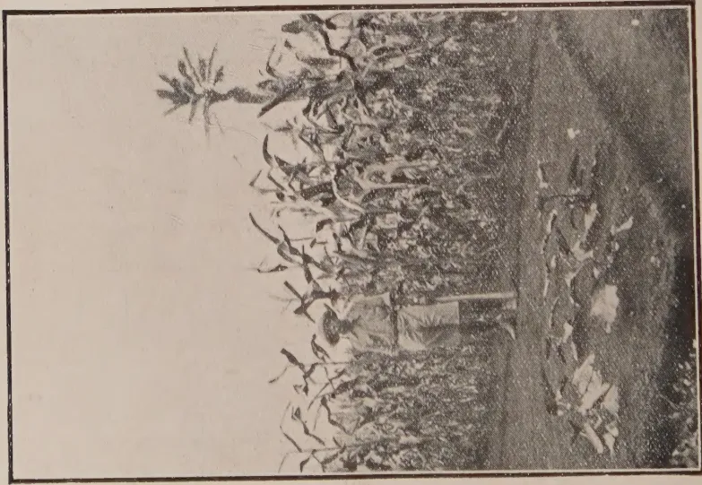
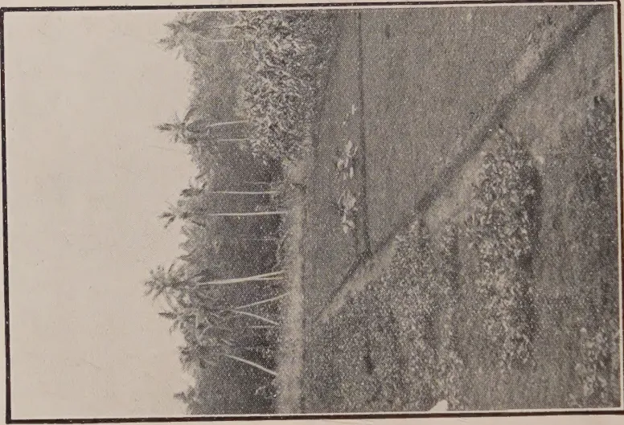

THE
TROPICAL AGRICULTURIST:
JOURNAL OF THE
CEYLON AGRICULTURAL SOCIETY.
VOL. XLIX. PERADENIYA, SEPTEMBER, 1917. No. 3.
AN APPEAL.
In the July number of the TROPICAL AGRICULTURIST a review was given of the question of the food supply of the Colony. Since then attention has again been given to the matter in the Press, before the Legislative Council and by the Planters' Associations.
There is a feeling throughout the Colony that the question of the moment is the increased production of food stuffs, vegetables and curry stuffs.
In the present issue, there are included articles on the cultivation of these products and during the next three months the whole energies of the Agricultural Society will be directed towards interesting all agriculturists in the question.
There is no doubt that increased quantities of these products can be grown locally, and with the increasing difficulties in regard to exchange and the possibility of considerably reduced imports from India the matter is one of urgency. Every advantage should be taken by all to put under cultivation in food products as large an acreage as possible during the coming North-East planting season.
The months of October to December are recognised as being the best suited for planting food-products and in many parts of the Island these are the only months in which successful cultivation can be carried on. The present opportunity should not be missed and it is the duty of all to plant some products during the coming months.
Arrangements have been made for supplies of seeds to be available, and Government has authorised the free issue of seeds of curry stuffs through Government Agents to villagers who can
122[SEPTEMBER, 1917.be relied upon to grow them. Special packets of seeds suited to the different districts are being made up for sale by the Agricultural Society and packets of vegetable seeds will be made available at reduced rates.
There should be no great difficulty in procuring planting material of manioc, sweet potatoes, yams and other food products locally, while experience has shown that many of the seeds of curry stuffs to be found in the bazaars throughout the Colony can be relied upon to grow fairly satisfactorily. Planting material is therefore available and with a determined effort by all agriculturists during the next few months a large increase in the production of food products and curry stuffs should be possible.
The cultivation of many curry stuffs locally is purely experimental. Before the next issue details of early experiments in School Gardens and elsewhere in the Colony should be available and these should serve as a useful guide. For the present, it is sufficient to indicate that curry stuffs are likely to succeed best in dry districts and in some localities should grow quite successfully.
In the wetter districts the main attention should be directed to yams, sweet potatoes and vegetables, while localities above 4,000 feet should concentrate mainly upon the growth of English vegetables.
In the leaflet issued by the Department of Agriculture and reproduced in the present number of the TROPICAL AGRICULTURIST some general recommendations are made and methods of cultivation are indicated. It must be realised that these recommendations are based as far as possible upon local experience, but no hard and fast rules as to where such and such a product will grow can be laid down.
It is the duty of all at the present time to grow all the food products and vegetables possible and to make trials with the production of curry stuffs. It is imperative that our large imports should be reduced in the present crisis.
An appeal is made to all. The solution of the difficulty will be easy if everyone attempts to do something. The next three months should be busy ones, and everyone should ask himself "What can I grow?" and "how can I help?" To increase the production of food stuffs, vegetables or curry stuffs in the Colony should be the aim of all.
SEPTEMBER, 1917.]123F. G. SPRING, N.D.A., F.L.S.
Agriculturist, F.M.S.
(Paper read before the Agricultural Conference, F.M.S.)
In the past few years many changes and improvements have been made in rubber planting but this is only what would have been expected considering the size and importance of the industry. It cannot be claimed, however, that there has been any great advancement in knowledge of soil culture and artificial fertilizers as applied to rubber land. The varying conditions under which a rubber tree can be grown are partly responsible for the somewhat slow progress. Hilly and flat lands should not be treated in all respects alike and the same applies to heavy and light soils, deep and shallow.
The objects of tillage are to make the soil lighter, more porous and permeable to roots, to enable vegetable and mineral matter to decompose more rapidly, to promote oxidation and stimulate the activity of nitrifying bacteria, to loosen the particles of soil and mix them, to check the growth of weeds and reduce soil evaporation.
Tillage is of the utmost importance but it requires to be applied to suit conditions. Heavy yields of rubber are obtained, in many instances, on land which has never been tilled and which is comparatively poor in essential plant food constituents but in such cases it is generally found that the mechanical condition or mixture of the soil is excellent. Rich lands are sometimes very poor yielders and this may be owing to quite a variety of causes but a not uncommon one is mixture of soil. The mechanical condition of a soil is of the greatest importance in rubber growing, more so, perhaps, than its chemical. Improvements can be effected in this direction by tillage and the turning under of green manures, the latter opens up heavy soils and renders light soils heavier, or in other words tends to establish an equilibrium.
I will deal in the first place with hill cultivation and then refer to treatment of undulating and flat lands. It is common knowledge that tillage cannot be carried out on hill land without considerable loss by surface wash, but several methods may be adopted to enable one to cultivate a soil properly and yet reduce surface wash to a minimum. A cover-crop on the land is a reliable preventive, but, unfortunately, there is always a period of soil wash following tillage even with a plant which rapidly reproduces itself.
Terracing has much in its favour but can only be recommended provided it is done previous to planting. The terraces require to be at the same elevation throughout otherwise the object aimed at is lost. Any wash from the slopes is retained on the flat terraces and this assists in the nourishment of the tree. Should the land be very steep it is advisable to plant some over-crop such as Centrosema plumieri on the slopes and it may be desirable
124[SEPTEMBER, 1917.to establish a strong growing plant, for instance, citronella or lemon grass, along the edge of the terraces. The flat terraces are maintained clean weeded and tilled when required. I have seen remarkably good results from rubber grown under such conditions and have no hesitation in recommending it for hill land. One estate in Negri Sembilan has a good area planted in this way and the writer was much struck with the growth of rubber there as compared with that of similar age in adjacent fields. Terracing cannot be recommended for previously planted areas and in such cases circular plots may be gradually constructed around the trees; this is best commenced when the trees are quite young, the diameter of the circle being increased as the tree ages. Should these plots be kept well tilled it is surprising how rapid growth is and there is every prospect of an excellent root system being developed.
With regard to drainage of hill land I think it is generally agreed that contour drains are unsatisfactory while perpendicular ones are good examples of what not to do. I am doubtful if any type of open drain, on hill land, serves its purpose in an efficient manner and in the majority of cases it is better to dispense with drains altogether and adopt some such system as that referred to.
In the case of undulating land tillage can generally be effectively carried out without any material loss. On the flat and gently undulating country, cultivation is, I believe, more essential and beneficial than on the hill, the obvious reasons being that flat land is, as a rule, heavier in nature, and has not as good air circulation, and consequently responds better to cultivation. There are various forms of implements of tillage, ploughs, cultivators, and harrows which do excellent work and may be used to great advantage on the flat and gently sloping lands, provided the timber has been cleared and estate drains do not materially interfere with the work. Tillage should be commenced at as early an age as is possible in order to compel surface roots to grow at a greater depth in the soil and thus enable tillage to be done, in later years with a minimum injury.
The changkoll and fork are the most common implements of tillage here, and I propose, therefore, to make a few remarks regarding their efficiency. When used in young clearings it is, I believe, a waste of labour to changkoll or fork all over the area. Should one commence this type of tillage in circles around each tree, increasing the diameter as the root area develops, it is probable that excellent returns will be obtained when costs are considered. Ultimately, the circles would meet and tillage would then be conducted all over the land, the greatest attention being given to culture in the middle of the rows. As regards depth of tillage this will, of course, depend on the nature of the soil, but generally speaking, the heavier the soil the greater the depth required.
Cultivators and harrows are more economical but, unfortunately, they can only be used in certain cases. On Castleton Estate, Telok Anson, harrows have been in operation for some considerable time, where they have done good work at a small cost. The cost of tillage of the first one or two applications is comparatively high but decreases as the tilth improves.
SEPTEMBER, 1917.]125With regard to drainage of flat land it is well known that this is of the utmost importance. Should a soil be water-logged, or the water level near the surface, it is impossible to have a good tap-root developed, the absence of one being often evident by loss of trees during wind and rain storms. Cultivation and manures will not effect a remedy, in fact it is waste of money to adopt either until drainage conditions are first improved.
There is some difference of opinion as to when tillage should be done. Personally, I think the best results are likely to be obtained when done towards the end of the wet season in order to conserve the then abundant water for the dry period.
Soils which are more or less baked on the surface have lost, and continue to lose, a good deal of water by soil evaporation. In some instances the surface is like a brick and should this condition be present on a slope the majority of rain water merely runs off the land. It is obvious that to cultivate a soil during a dry season is expensive but in addition to this you effect a remedy after considerable damage has already been done in loss of soil water. To cultivate at the close of a wet period bears out the old saying: "Prevention is better than cure." Tillage to a depth of two or three inches will greatly assist in the conservation of water.
With regard to the cultivation of old clearings the soil of which has not been previously turned over to any depth, one must use a good deal of discretion. It could not be recommended to till this soil in such a way as to destroy surface roots, both large and small, in a drastic fashion. Light changkolling, in the first instance should be carefully done and all large roots avoided. I do not think much harm is done in cutting numbers of small surface roots, as a better root system is, by cultivation, encouraged at a greater depth in the soil. The depth of tillage may be gradually increased as time goes on. There is little doubt that the best root system is developed when tillage is commenced while the trees are quite young; one must devote attention to soil cultivation, at some time or other, if maximum yields of rubber, good bark renewal and healthy trees are to be maintained.
Dynamite has been considered, for some time past, in connection with rubber growing and may possibly prove a valuable method of soil culture particularly as a means of breaking up heavy subsoils. Experiments were conducted at Kuala Lumpur Government Plantation with dynamite where good results were obtained as regards girth increase of young rubber. The greatest objection would appear to be that of cost.
The question of artificial fertilizers as applied to rubber is a rather delicate one and requires to be carefully considered. As long as good yields can be obtained by cultivation it is probably a mistake to resort to manuring. At Castleton Estate, Telok Anson, an extensive series of manuring tests are being conducted on good class land and the results obtained so far would not appear to justify their application, and many estates with rich soils would, in all probability, behave in a similar way. There are, however, many cases where it would appear that manuring is to be recommended and the man with long practical experience can generally discover those areas.
126[SEPTEMBER, 1917.A test was conducted in the Kuala Lumpur Gardens with young rubber growing on poor laterite soils with the following results : In the first year, the trees in the manured plots, in every case, showed a good excess in girth measurements over the trees in the unmanured plots. In the second year, there was no manure applied, and the average girth increases for this period were about equal to that of the control plots, which goes to prove that the manures had good effect for one year only. At the commencement of the third year, a second application of similar manures was applied, and the results for this year were also satisfactory but the excess was not as large as that of the first year. In the fourth year, no fertilizers were applied, and it was found that the manured plots had not given as large an average girth increase as the control plots. In this particular soil, the manures appear to have had a stimulating effect as regards growth, after each application, for about one year but afterwards there seemed to be a slight reaction. Over the four years, however, the total girth increases of the manured plots in every case considerably exceed that of the controls. At the close of the four years tapping was commenced and it was found that the control plots gave the poorest yields of rubber while the highest yields were obtained from those manured plots which gave the largest girth increases. This is the result for the first nine months of tapping and it will be interesting to see how long the high yields are obtained. In the ninth month of tapping the manured plots continue to give the proportionate excess of rubber over the unmanured plots, and there seems no evidence at present of a declining superiority ; rather the contrary. I have not the slightest doubt that the fertilizers in this soil were beneficial, for we would appear to have recovered the costs of application in the first nine months of tapping. It should be remembered that increase of girth means a corresponding increase in length of tapping cut.
Good results from manuring might be expected from the following : poor, light, laterite soils, soils deficient in one or more essential plant food material, thinned out areas which are slow in recovering from the effects of close planting and areas which have been severely tapped in the past.
As regards the method of application this will depend on the age of the trees. With young rubber, I believe, the best value is obtained by spreading the manures around each tree, the area treated would naturally vary with small and large trees and increase as the rubber ages. The manures are best turned under to a depth of two or three inches, sufficient to prevent loss by surface wash. With older rubber the manures may be broadcast all over the land but more especially about the middle of the rows and then turned under. I do not favour the placing of manures in trenches around a tree as in this area the manures are too concentrated and for a time limited to a small root feeding area.
I do not propose to deal with quantities of manures to be applied, per acre, as this varies more or less with each fertilizer. Information, however, can be obtained on application to the Department of Agriculture.
With regard to the kinds of manures I might mention that a complete fertilizer consisting of sulphate of ammonia, double superphosphate,
SEPTEMBER, 1917.]127sulphate of potash with the addition of lime gave the best results in the Kuala Lumpur Gardens. Comparatively good returns have also been obtained from Perlis guano, bone-meal and basic slag.
One of the chief effects of lime on a soil is to accelerate nitrification and thus enable plants to draw upon the nitrogenous and potash stores in the ground. It has a neutralizing action on organic acids which helps to sweeten sour soils. Lime has a beneficial action on clay soils by breaking them up, while sandy or light soils are improved by binding the particles together. In order to obtain the full benefits of artificial fertilizers I think it is essential to apply a small dressing of lime beforehand; this should be done several months previous to the spreading of the fertilizers on the land. There are many soils in Malaya which would, I feel sure, respond well to lime treatment. Quick lime is the best form of application, the lumps being distributed throughout the field and allowed to slake naturally. One night's rain is sufficient for this decomposition to take place but in dry weather it may take several days. The result is a fine dry powder which is found easy to distribute equally over the land. Slaking lime in this country in a large heap and adding water does not appear to give such a fine dry powder as the natural process and the cost of distribution is higher.
Before closing this address I would like to refer briefly to costs.
Establishing Cover-crops.—I will give in some detail the cost of establishing Centrosema plumieri as this is one of the most promising cover plants for rubber clearings. The seed is dibbled in at distances of three feet apart each way at a cost of $3 per acre, 3 pounds of seed being required. The price of seed, at present, is from 25 to 50 cents per pound, which is somewhat high on account of the limited areas planted. The cost of weeding until the plant is well established amounts to about $3 per acre and if this sum is charged to ordinary estate weeding it will be seen that the total costs amount to from $4.25 to $5 per acre. The seed is sometimes broadcast at the rate of ten pounds of seed per acre on a well-prepared surface, but dibbling is preferable.
Cannavalia ensiformis is best dibbled in three feet apart requiring 8 pounds of seed per acre or 15 pounds if broadcast. The cost of weeding until Cannavalia is established is higher than in the case of Centrosema, owing to the habit of the plant.
It may generally be taken that large seeds such as those mentioned above give the best results when dibbled in, while small seeds such as horse gram require to be broadcast. When broadcasting is the method of sowing, the land is first changkolled or forked to a depth of about three inches, sufficient to provide a good seed bed, and this will cost from $2 to $3 per acre.
128[SEPTEMBER, 1917.Horse gram (Dolichos biflorus) sown broadcast requires 12 pounds of seed per acre, which can be obtained in the local markets at six to seven cents per kati. The cost of broadcasting is 25 cents per acre. Sarawak bean (Dolichos Hosei) is best established from cuttings and this system of planting is slightly higher than dibbling on account of additional cost of procuring and planting cuttings.
Terracing.—A six-foot terrace made by three feet cutting and three feet filling in costs 25 to 30 cents per 50 feet length, which amounts to about $10 to $12 per acre allowing on an average 20 feet between the terraces. It might be mentioned that the cost of maintaining well-made terraces is small, considerably less than upkeep of drains.
Dynamite.—Sixteen cents per charge, inclusive of labour, is a reasonable figure, one charge per tree is generally what is allowed but with heavy clays more may be required.
Cultivation.—The following are the actual costs of various methods of cultivation, conducted at Castleton Estate on a heavy soil. Plot 1, three crops of horse gram were grown within a year, at a cost of $17.45 per acre. In Plot 2, surface weeding was conducted monthly at a cost of $10.71 per acre per annum. The treatment in Plot 3, was monthly weeding and chang-kolled twice per year to a depth of four inches which amounted to $18.27 per acre per annum. Plot 4 was changkolled once every three months to a depth of four inches for $21.96 per acre per annum, while in Plot 5 the land was forked once in three months to a depth of four inches at a cost of $21.21 per acre per annum. In Plot 6, harrowing was conducted twice a month for $7.26 per acre per annum. The harrows were first drawn by buffaloes but Indian bullocks were found to be very much cheaper. A couple of bullocks can harrow five acres per day of eight hours. The above figures are the results obtained in one year, but now the costs of changkolling, forking and harrowing are very much less, in some cases about half, while surface weeding remains more or less the same. It is usually found that as deep tillage is continued the costs become less, for a time, until a high class tilth is formed when charges remain about the same.
Artificial fertilizers.—The cost of spreading artificial manures varies somewhat according to the quantity applied. Two hundred and fifty pounds of a mixture can be broadcast and slightly covered for $1.80 per acre.
The cost of applying 1,000 lb. of lime spread around young trees and turned under amounts to about $9 per acre, inclusive of labour, while one ton broadcast all over the land, and turned under would cost, approximately, $23 per acre. A complete mixture consisting of lb. per tree, sulphate of ammonia, lb per tree, double superphosphate, 1 lb. per tree, sulphate of potash, and 1,000 lb. lime per acre was applied at a total cost of $28 per acre (November, 1911).
A dressing of four cwt. Perlis guano costs $8.50 per acre, while three cwt. Bone-meal worked out at $13 per acre (November, 1911).—
AGRIC. BULL. OF THE F.M.S. Vol. V. No. 7.
SEPTEMBER, 1917.]129T. J. CUMMING.
(Manager, Seafield Estate, Selangor, F.M.S.)
Paper read before the Agricultural Conference, F.M.S.
In the early days of rubber planting few realized to what magnitude a tree 15 to 20 years old would attain, and most planters made the mistake of planting too closely—some more, some less—common distances being 10 ft. × 10 ft., 10 ft. × 15 ft., 12 ft. × 12 ft., 15 ft. × 20 ft., and so on.
Though these distances have since been found to be too close there is a good deal of reason in the case of the early planter who planted closely, as no one at that time could foretell the future of the marketable product, and, while the price of rubber was booming at 10s. to 12s., there was a lot of profit to be made off an acre carrying from 150 to 300 trees, and in the case of the private owner, he naturally wanted the maximum yield in the minimum time.
Then, too, labour was cheaper, and the profits were sufficiently large to allow of little extravagances, or rather, what appear as extravagances to-day, to be glossed over.
The slump in the price of rubber caused planters to look around for ways and means of curtailing expenses, and a point that was quickly apparent was the fact that practically the same crop could be, and was, being got off an acre carrying 100 trees as off an acre with double the number of trees, and the cost of tapping in the latter case was naturally double the former.
There appeared also with the close planting the delay in bark renewal, and this, of course, meant loss of money, as the longer the period required for renewal the less the yield per acre over a period of years. To commence with, a two years' renewal was considered sufficient, and it appeared to be so until the next two years' renewal came to be operated on, when it was found the bark was not nearly ready for tapping, and wounding and reduced yields were the result.
It was noticed that trees on the outside of the fields or near roads where there was any extra space, appeared to have a much better bark renewal than those inside, and this probably first led one to consider the necessity of light and air to procure good healthy bark renewal in a reasonable period.
The Agricultural Department were at the same time working on the subject of the rubber tree and it was pointed out in various lectures and bulletins that latex was formed in the leaves of the tree, and that without a good head of leaf the tree could yield but little latex. Well, as everyone knows, with close planting all the lateral branches get pushed or drawn up almost perpendicularly in order to catch the little light there is at the top and instead of having a tree with fine wide-spreading foliage, there is something closely resembling a "swizzle stick."
If height was all that was wanted for tapping then close planting would be the correct thing, but, as girth of stem and lots of leaf are the main factors necessary to ensure profitable yields, close planting undoubtedly fails.
Fear of loss of crop through thinning should not deter any one from tackling a closely planted field as, if the thinning is done while the trees are fairly young, the remaining trees will quickly respond to the improved conditions and the crop will soon reach its normal figure and pass it, while the longer thinning is delayed, the more crop is to be lost.
130[SEPTEMBER, 1917.Disease too is a factor which has had a lot to say in the necessity for thinning out. As has been already stated, light and air are absolutely necessary for the well-being of the tree and nothing is more conducive to the spread of disease than closeness and damp.
Another advantage in wide planting is that after rain the surface of widely planted trees dries much more quickly and allows tapping to go on early, while sometimes with close planting tapping is impossible for a few hours after a heavy shower.
There is also the saving in labour and utensils, and I need not go into details to show this, as previous papers on the subject have dealt very fully with this point. It is obvious that if an acre with say 100 trees yields the same amount as an acre with 200 trees, there is a considerable saving in labour and only half the number of cups, spouts, etc., are required, while the percentages of output are bound to be to the advantage of the wider planted area, as there is half the number of trees, spouts and cups to give "scrap."
The difficult question for the planter to start with is whether to thin out by selection or remove every alternate tree if his original planting allows of this.
On one estate the original planting was 20 ft. 20 ft. and in order to get more trees to the acre this was interplanted with a quincunx, thus : . : . : giving double the number of trees to the acre and if it were found necessary to thin out, the quincunx could be removed.
The necessity soon arose, and when it came to thinning out, the ravages of Fomes, white ants, wind storms, etc., had been left out of account and many quincunx trees had to be left in to make up blanks, and it got so confusing in places that the original 20 20 line was frequently mistaken for the quincunx.
The theory is all right as a theory.
In ordinary square planting the best method in my opinion is by frequent selection. It takes much longer and seems to keep the work of thinning out dragging on for a long time, but there is less crop lost this way, as each round the trees which are not paying their way are removed, giving the advantage to the adjacent trees, the yield per acre is not greatly reduced and the cost of tapping is automatically reduced.
With the present-day planting thinning out should not present any great difficulty as provision can be made for thinning out in the early stages. The time for thinning out is just as soon as growth is being hampered by branches interlocking, probably when the trees are about four years old. If a clearing is planted 20 ft. 20 ft. with a view to thinning out later to leave say 70 or 80 trees per acre, the trees to be removed could be marked after careful examination and comparison with adjacent trees, and any branches interfering with the development of the favoured trees could be removed periodically as the necessity occurred. The marked trees could in this way be tapped for a considerable time in the regular round, enabling a fair return of latex to be obtained before they are finally removed and leaving them with very few heavy branches to cause damage while they were being felled. Of course, the ideal system would be to allow each tree eventually the same space, but this, I fear, would be impossible in practice, as weak unhealthy trees are frequently found side by side and have to be removed, while good trees have to be left near each other to make up the number per acre.
There are various methods of removing the tree. Some recommend pollarding the first stage, tapping the stump so long as it gives latex, then removing it. This system I have found not at all profitable. It is much more difficult to remove the pollard than it is the whole tree, as in the latter case the head gives leverage when the side roots are cut away, while the pollard has to be lifted bodily from the ground. The pollards yield very
SEPTEMBER, 1917.]131little latex after the first few tappings, and tappers are inclined to be careless with the tapping of them, and this carelessness, like other diseases, soon spreads to the good trees. The roots of the pollards too are still feeding and the adjacent trees are not benefiting to the same extent as if the trees to be cut out had been removed wholesale.
Another system is to cut off the tree about a foot above the ground, but since the discovery of Ustulina zonata I fancy this system is not much in favour.
The most satisfactory way is to cut out the tree about two feet below the level of the ground, removing as many of the side roots as possible without interfering with the roots of the adjacent trees which are to remain. The cut-out trees and branches should be burned, or otherwise removed as quickly as possible, to prevent an invasion of borers and the spread of disease.
I have to thank the General Rubber Co., Sumatra, for the privilege of seeing their report on thinning out and for permission to use their recommendations.—AGRIC. BULL. OF THE F.M.S. VOL. V. NO. 7.
Sheet rubber frequently shows a dark line near and parallel to the edges. The cause of this has been investigated by DR. P. ARENS, who explains the cause as follows:—
The cause of this line is a very simple one. The strength of the rubber, coagulated in the pans, is not the same in every part. The surface, which is exposed to the air, especially near the edges, is somewhat stronger than the rest.
When the sheet is rolled and insufficient precautions taken, this surface is less stretched than the other parts of the coagulum, with the result that the latter protrudes beyond the original margin of the sheet. This original margin retains its position a certain distance inside the newly formed edge and, since it was the hardest part of the coagulated mass, it is not so compressible as the rest and therefore forms a distinct ridge.
To avoid this, certain measures have to be taken, when putting the sheet through the rollers. The sheet must pass through the rollers in the same position it had in the coagulating pan, i.e., the upper surface in the latter kept uppermost when put in the rollers. The sheet should be gripped by the rollers in the middle of the small side first, so that the edges pass through the rollers somewhat later than the middle. The edges must be turned down a little, whilst the sheet is passing through the rollers. If this is done, the margin of the sheet, hardened in the coagulating pan, will also form the margin of the sheet after rolling, and therefore no prominent line will be visible.
It is advisable not to fill the pans too full, as the prominent line will be more easily formed on a thick sheet than on a thin one.
A good material on which to train the coolies for this work is sheets the surface of which is darkened by oxidation in the coagulating pans. If these sheets are rolled in the proper manner, no white margin should be visible after rolling.—INDIA RUBBER WORLD, MAY 1, 1917.
132[SEPTEMBER, 1917.(Continued from p. 10.)
The physical testing of rubber materials as specified by the Board of Estimate and Apportionment, of New York City, reported in the March number of THE INDIA RUBBER WORLD, is continued as follows :
The determination of friction or adhesion strength between the rubber and the fabric, or between the layers of the fabric, shall be made as follows :
Apparatus.—All friction or adhesion strength tests shall be made on the tensile testing machine.
All rubber hose and other wrapped circular test pieces shall be slipped on a mandrel one-eighth inch wider than the test piece and of the same diameter as the inside of the hose.
The mandrel with the test piece in place shall be slipped on the pin attached to the power head.
The free end of the test piece shall be clamped to the lower head of the testing machine without twisting and centred over the mandrel.
The weight clutches shall be raised and the machine started at the uniform rate of one inch per minute.
After separation commences the load shall be constantly watched to see that it does not at any time fall below the specification requirement.
On the SCHOPPER machine this load shall be recorded on the automatic recording device.
The entire friction layer or layers shall be separated.
Cotton rubber-lined fire hose test pieces and test pieces of a similar character shall be tested exactly as prescribed in the foregoing under "Rubber Hose and Circular Test Pieces," except that the fabric shall be fastened to the power head with a clamp instead of a mandrel.
Packing and other flat test pieces shall be tested exactly as prescribed for rubber hose, except that a clamp instead of a mandrel shall be used, and either the fabric or the rubber shall be fastened to the lever head according to the thickness of the rubber.
If the rubber is not thicker than one-eighth inch the fabric shall be fastened to the lever head.
If the rubber is thicker than one-eighth inch the rubber shall be fastened to the lever head.
When fabric and fabric are to be separated, the heavier shall always be fastened to the lower head.
When heavy materials like belting are to be tested, the test pieces shall consist of not more than two piles of the fabric for any one test.
The test pieces prepared and measured beforehand are placed in a hot-air oven at the specified temperature for the specified time, cooled to room temperature, the tensile strength and elongation tests made, compared with the untreated specimen, and the reduction calculated to the nearest tenth per cent.
SEPTEMBER, 1917.]133Tube and cover test pieces for the gasolene test shall be cut, prepared and measured as specified under preparation of tensile strength. Test pieces shall be completely immersed in 57- to 63-degree Baumé gasolene for a period of 48 hours at a temperature between 60 and 80 degrees F. They shall then be removed, allowed to rest and freely evaporate in air at the same temperature for 24 hours. The tensile strength and elongation tests shall then be made, compared with the untreated specimens and the reductions calculated to the nearest tenth per cent.
Friction strength test pieces shall be made on a one-inch specimen cut for the mandrel test. After treatment with gasolene, as outlined above, the friction strength shall be determined, compared with the untreated specimen, and the reduction calculated to the nearest tenth per cent.
The determination of steam resistance of hose shall be made by connecting three-foot lengths to a steam supply pipe and maintaining the pressure required in the specification for the period called for. The tensile strength elongation and friction strength tests shall be made on the specimen cut, prepared and measured after the steam test, compared with the untreated specimens and the reduction calculated to the nearest tenth per cent.
The length selected for test shall be subjected to 140 pounds air pressure. The cover shall then be cut lengthwise with the hose for at least two feet. The pressure shall be maintained for five minutes. At the end of this period the length, still under pressure, shall be submerged in water. If there is a distinct escape of air which is not due to the air confined in the structure of the walls, the hose shall be considered porous.
The determination of bursting or proof pressure shall be made in the following manner :
The hose shall be stretched out on a plane surface in a straight line, connected to the water line or pump and filled with water, leaving the air-cock open to allow the air to escape. The air-cock shall then be closed and a pressure of ten pounds per square inch applied.
The test shall then begin by taking original measurements with the pressure at 10 pounds.
Pressure tests shall be measured with a standardized gauge. The increase in pressure shall be made at the rate of 100 pounds per minute and the hose under test shall be held for measurement not more than two minutes.
The unit specification may sometimes modify the foregoing procedure in regard to the pressure at which measurements are to be taken and the period of time to hold pressure while measurements are being made, in which case the procedure as stated in the unit specification shall be followed.
When called for in the specifications hose shall be subjected to bursting pressure when laid out straight, when curved in a circle of 27 inches radius and when kinked short off.
When the hose is bent flat on itself with a sharp kink and securely fastened in that position for the kink test, the distance from the tail piece of the coupling to the kink shall be according to size and kind, as follows :
| Kind and Size. | Distance to Kink. |
|---|---|
| 1½-inch fabric and rubber hose ... | 15 inches |
| 2½- and 3-inch fabric hose ... | 18 " |
| 2½- and 3-inch rubber hose ... | 24 " |
At the meeting of the Legislative Council held on Wednesday, 8th August, 1917, the HON. MR. TILLEKERATNE said :—“I rise, Sir, to move the motion standing in my name :—“That Government do take prompt steps to encourage by every possible means, the greater production of Food Stuffs, Curry Stuffs, etc., locally.” This motion too is one that commends itself to both Official and Unofficial Members of this Council, and my task is rendered all the easier by reason of the fact that Government has already moved in the matter. I sent in notice of this motion to the Clerk of the Legislative Council just a month ago, and I find that Government has since circularised the Government Agents, the Planters' Associations, the Agricultural Department and others. I need not therefore waste the time of this Honourable Council with a long speech, but content myself with throwing out a few suggestions as to the methods of encouragement I refer to. In this country, Sir, at any rate amongst the villagers, anything that does not bear the Government stamp is looked at with suspicion. If my object is to be attained we must have Government help, Government encouragement and above all Government patronage. The Director of Agriculture, with whom I had the privilege of a private talk, is most sympathetic. He has already arranged for the free distribution of vegetable seeds to the poorest of the poor through the Government Agents. Then the Co-operative Credit Societies, the majority of which are in a very dormant state, can be galvanised into activity and could help by buying up the surplus produce in their own korale and selling them to another korale or district, through its Co-operative Credit Society, where there is a demand for food products. Then I would suggest the liberal issue of free chena permits to bona fide villagers during the continuance of the War. But care should be taken not to allow more acreage than one applicant can clear and cultivate, and also that no villager is allowed any chena who neglects to cultivate his paddy fields without reasonable cause. Chena permits might also in some districts be issued to landed proprietors who undertake to advance money to those of their labourers whom they had to discharge owing to the fall in price of coconuts. In these cases some agreement should be entered into whereby the chena permit-holders undertake to plant up jak, lunumidella, and other trees before the expiration of the period of the permit. I suggest between three and five years. At the expiration of this period the land would be handed over to Government.
SEPTEMBER, 1917.]135Then, Sir, I would suggest the greater encouragement of vegetable growing. In the first instance I would suggest that vegetable gardens on a small scale be started on all lands belonging to Government or semi-Government Departments. I mean Rest House premises, Police Stations, Railway Stations, Gansabhowas, Village Committee bungalows, Circuit bungalows, and village schools. These would materially increase the food supply and at the same time, being easily accessible, would serve as object-lessons to the villagers. Any amount of talks with the villagers, distribution of leaflets and distribution of seeds alone would be of no use. They would listen most respectfully and disperse thinking in their hearts, "If these gentlemen are afraid of the food supply falling short, why do they not start growing them themselves?" Leaflets, so lavishly distributed, generally find their way to the boutiques where they are used to wrap up curry stuffs and thus serve to encourage food production in a way not dreamt of by the framers of these leaflets! In the way of Government encouragement I would ask that the Government Agents make it a point to visit, on their circuits, the best kept vegetable garden in a village and offer some words of encouragement and advice to the owner. Once it becomes known that the Government Agent or the Assistant Government Agent has honoured so and so with a visit and that the honour was solely due to the fact of his having the best vegetable garden, his neighbour too would think it worth his while to merit the honour of a visit from the Government Agent, the Head of the Province. Later on, when the owner finds that it pays him to grow his own foodstuffs and vegetables, what efforts he put forth for the sake of courting a visit from the Government Agent he would continue to put forth for his own gain. Further, the Government Agent's visit would be a sure and direct indication to the villager that the Government is genuinely interested in the matter. Government Agents and Assistant Government Agents are pretty frequently out on circuit on various duties and a half-hour, spent as suggested by me, would be a great source of encouragement. Why I specially wish the Government Agents and their Assistants to undertake this task is because, Sir, the villagers do not recognise as a Government Department any that is not under the direct control of the Government Agent, the representative of the Governor. This is a fact though it is not generally known and it explains why it is that the Agricultural Department, for instance, is not so intimately in touch with the humbler class of the villagers as we would wish it to be. The villager is, I admit, thrifty and indolent to some extent. But if those above him indicate the slightest interest in his welfare he is quite ready to respond. He naturally looks up to Government to show him the way and help him. This is due, I think, to the sort of feudal system under which he has been governed for ages past.
Then I would ask for Government patronage in the matter of holding village market shows in each Vidana Arachchi's Peruwa. There should be no expenses incurred in putting up sheds, decorations, etc. These shows
136[SEPTEMBER, 1917.should not be held for the self-glorification of any one individual but for the good of the people. The village school or the village market can be utilised for the purpose of holding these shows. In fine weather they may be held in the open air. These shows should be under the direct control of the Chief Headmen. Headmen should not be allowed to compete. Nor should the richer or more influential people of the korale. It should be a village show pure and simple. The more influential people could show their interest by helping to judge the exhibits. As regards prizes, Government need not spend anything. Perhaps the Agricultural Department could set apart for each korale a small sum annually for prizes. These prizes should be in cash and should not exceed Rs. 5 and may be even so low as a rupee, but a certificate under the hand of the Government Agent should accompany each award. It is not the prize but the fact that a prize was won that will be appreciated. The prominent villagers can be easily induced to offer a few prizes, which should be in cash. If the Government Agents use their influence judiciously there would be no difficulty in inducing people to offer prizes periodically.
Then as to the difficulties the villagers have to contend with, the greatest would be Cattle Trespass and Thefts. To prevent these I would suggest that the spirit of emulation should be fostered amongst the headmen. The minor headman has a book called the Act Book. In this a record is kept of all entries good or bad. The headman whose village or group of villages carry off the greatest number of prizes or in whose division some real effort is made to increase foodstuffs would get a good conduct entry in his Act Book. To gain that he would take a personal interest in the vegetable gardens of his village and try to save them as much as possible from thefts and cattle trespass. Then in the interior where chenas are cultivated to prevent depredations of wild beasts, Chief Revenue Officers should allow, under proper control, the use of village guns with gunpowder, shot and percussion caps. Wild beasts have not heard the sound of firearms for some considerable time now and come out with impunity.
I would specially recommend the growth of yams, sweet potato, etc. They furnish a meal in themselves. I am glad to see that estates have been in the habit of setting apart plots for vegetable gardens. I need not go into the question as to what should be grown. Each district will know what is best for itself. But plantains are easily grown and will give as good a return as rubber. It requires irrigation. Chillies are very easily grown and will give double the return that coconuts do. Pepper, onions, etc., require little attention. Indian corn is easily grown and would also serve as fodder for cattle. As regards paddy cultivation, Sir, I must confess I find it difficult to suggest any means of increasing the production, unless it be that some reward is offered to those Vel Vidanes and equivalent headmen where they exist, whose tracts of fields show the greatest yield or increase. It is the least paying of all industries. I have tried the above system at Matara in the Four Gravets, with much success. At a time like this when coconuts that we sold in Matara for Rs. 72 a thousand are now sold for less than Rs. 22, I can only hope that the small land-owner would think of cultivating his fields more systematically and more frequently. Ceylon at one time consumed no
SEPTEMBER, 1917.]137more than it produced. We cannot well expect to revert to that state of things so long as it pays us more to grow tea, rubber, coconuts, cinnamon or citronella. But the time is opportune for encouraging the greater supply of food-stuffs in the Island. We are passing through a great financial crisis. If the War continues much longer we might find difficulties in the way of getting our food supply from India. If Government accepts this motion I would ask that steps be taken for the Government Agents to be kept informed what progress has been made in chenas, paddy, vegetable gardens, etc., monthly. Mere sending out of circulars would not do. All the officials of Government from the Government Agent downwards must take an active interest in the question. Government has under consideration the matter of railway facilities and if, as I suggested, the Co-operative Credit Societies can interest themselves in buying and selling excess produce, there would be little chance for the middle-man to exploit the villager for his own purposes. I have placed the matter as fully as I could before the Council.
The HON. MR. J. H. MEEDENIYA, in seconding the motion, said : I rise, Sir, to second the motion of my Hon. friend. At present, this country depends on rice imported chiefly from India and Burma. Therefore, any interference with the importation of rice or failure of crops there, will cause great distress here. So it would appear to be the duty of everyone in this country to help in the raising of foodstuffs locally to meet the demands of the country and make her self-dependent. Ceylon is an Agricultural Country and Government should afford all facilities for the cultivation of rice. Large sums of money have been expended on irrigation works, but, as we all know, the lands under these irrigation schemes are not fully utilised, firstly, because the cultivators are unable to obtain land on easy terms ; and, secondly, owing to the malarious and unhealthy conditions of the localities. I would therefore suggest that irrigable lands be allowed to cultivators, capitalists and settlers on easy terms, and with this object a committee may be appointed to consider how best full advantage of the irrigable lands may be availed of and to formulate a scheme.
The growing of vegetables and production of curry-stuffs can best be encouraged in the villages by means of model gardens at convenient centres in groups of villages established at the expense of the village committee and superintended by the officers of the Agricultural Department and the Revenue Officers. These model gardens will be a means of imparting instruction to the villagers who, under the provisions of the Village Committee Ordinance, must be compelled each to grow a certain part of his lands with vegetables and curry-stuffs. In this connection I should like to suggest to Government the advisability of enacting at the present day rules such as those issued by Government on 10th April, 1885.
These rules are now in abeyance. I am of opinion that their re-enforcement will largely help to solve the problem of an adequate food supply in the villages. I might add that these rules, might be brought in under Village Committee Ordinance 24 of 1889, Section 6, sub-Section 5 of which provides for the introduction of rules compelling villagers to cultivate their lands.
138[SEPTEMBER, 1917.The HON. MR. HUYSHE ELIOT—in support—said that any steps that could be taken to improve conditions as regards the production of food-stuffs, curry-stuffs and vegetables must commend themselves to the members of the Council. The difficulty appeared to be the ways and means to set about the work. Taking the question of rice cultivation, the last speaker, MR. MEE-DENIYA, had referred to large sums of money that had been spent on irrigation, but the lands below were still uncultivated. If villagers or settlers could be induced to take up lands much of the difficulty of rice production would be overcome. The neighbourhood of tanks was feverish and unhealthy—very little inducement to anyone to take up cultivation. In regard to the production of food-stuffs and curry-stuffs most of them should realise its importance. What appealed to him was how they expected villagers to grow curry-stuffs unless a market for the disposal of the produce could be secured where the villager could obtain remunerative rates. That question would have to be gone into. On estates the coolies were encouraged to grow vegetables, but the conditions in India were different to those in Ceylon. In India more expensive land was available for cultivation than in the gardens behind coolie lines in Ceylon. He was interested in the letter addressed by the Colonial Secretary to the Planters' Association. If all the land available was cultivated it would certainly add to help to bring about a better state of affairs. This matter meant education. There was a good deal of ignorance in the country about growing food-stuffs. The villager should be given every encouragement. He heartily supported any measures that could be taken to bring about a better state of affairs.
The HON. MR. RAMANATHAN—who also supported—said that vegetables from different parts of the country flowed into Colombo. Most of the produce which came into Colombo was brought by Sinhalese women and children who lived outside the town. He dwelt on the habits of the women, how they grew the vegetables, attended to their household duties and trudged for miles to sell their produce, being away from home from morning till night, and also how they supported their inefficient and stupid husbands. (Laughter.) In the Northern Province the Tamil man and woman were equally industrious. Their difficulty was not so much the want of fertility of the soil as the want of a water supply. They had to lift water from wells to irrigate their fields and get any produce. Improvement in that direction was sorely needed. In Ceylon they were very poor. For a matter of that England itself could not maintain its own population without importing most of its food products from abroad. The day of reckoning had come and the present conditions were such that they were doing their best to keep away starvation. It was now that they were waking up to the fact that it was a great mistake to allow the agricultural population to migrate from their districts into towns. Government should take the greatest interest in the agricultural condition of this country. He earnestly hoped that His Excellency with his officers of great worth and experience would take early measures to see the subjects that were so very appositely and efficiently put forward by the Sinhalese Member, adopted.
SEPTEMBER, 1917.]139The HON. MR. R. E. STUBBS, Colonial Secretary—said, he was sure that every member of the Council had listened with pleasure to MR. TILLEKERATNE. That was what they more frequently desired though they never received—really practical suggestions with regard to the matter which he had raised. The question of providing more adequately for food-stuffs had been before them for a long time. A few days after the War broke out he was impressed with the desirability of taking steps to render themselves more self-supporting than they had been before. He, in fact, asked the Government Agents to take steps to issue chena permits as liberally as in their judgment was calculated to increase the food-stuffs in the Island. These steps were taken. In those days the exchange from India was working smoothly. He was glad to hear from several Government Agents—more especially from Uva, that the vegetables and chena crops grown there last year had been heavier than before. But with the exchange trouble it was found that greater efforts should be made to have food-stuffs all grown here and they would not be able to get any from India. He had instructed Government Agents to endeavour to induce villagers to grow locally such food-stuffs as was possible and for some time he had been obtaining details in information as to what effect there would be by free distribution of seeds to Government schools. At that time he did not know that Resthouses or other Government compounds which MR. TILLEKERATNE mentioned could be utilised. That was a very good suggestion for which he was very much obliged to MR. TILLEKERATNE. Therefore, all responsible persons should be asked to undertake experimental crops of a variety of seeds and ascertain how they grew in the various districts. Government had already done that and Agricultural Instructors had been told to make every effort possible to impress on the villagers the desirability of growing increased stocks in vegetables. He had recently received several suggestions for which he was much obliged. For instance, P. W. D. coolies should be encouraged to grow vegetables and food-stuffs wherever it was convenient on Government land by their lines. The Assistant Government Agent at Nuwara Eliya had found a suitable plot in which he contemplated growing potatoes in small holdings on a large scale. He trusted that similar opportunities might present themselves in other districts. The subject of rice cultivation was a matter which he always took a depressing view of, because it seemed the land which was really useful for that purpose was not taken up as the profit was not great. Government had spent large sums of money on irrigation works for which they could get no return. If it were possible to induce people to work up the land, he would suggest that Government should wipe off all previous expenditure as a bad debt. But whatever was done, there did not seem to be much prospect of increasing the rice supply locally. Some steps might be taken to make it a really paying crop. It seemed to him that it was not likely to be such a paying one unless the Agricultural Department could induce the cultivators to grow new varieties of paddy and follow better methods of transplanting. The conservatism of the cultivators in this country was such that the prospect of anything of that kind accruing was not very rosy. He had listened with much interest to the Hon. Member's practical suggestions and with much attention. That was a strong factor and if he would be so kind as to send him a note containing the various suggestions, he would do his best to support them.
The motion was accepted unanimously.
140[SEPTEMBER, 1917.Leaflet No. 5, Department of Agriculture, Ceylon.
Attention has recently been called to the necessity of increasing the quantities of food stuffs, vegetables and curry stuffs grown locally.
Free distributions of seeds of curry stuffs are being issued to villagers through Government Agents and it is hoped that the lands attached to Post Offices, Police Stations, Railway Stations, Railway Lines, Public Works Lines, Rest Houses, etc., will be utilized for the cultivation of food products, vegetables or curry stuffs.
The Planters' Association of Ceylon and the Low Country Products Association have also urged upon their members the desirability of growing these products on estates wherever possible or where the climate is suitable.
The Colony annually imports in round figures the following quantities of food products :—
| Quantity | Value | |
|---|---|---|
| Cwt. | Rs. | |
| Rice | 7,173,000 | 50,650,000 |
| Dhall and Peas | 195,000 | 1,380,000 |
| Chillies | 95,000 | 1,230,000 |
| Onions | 260,000 | 750,000 |
| Gram | 87,000 | 440,000 |
| Cumin | 12,000 | 380,000 |
| Coriander | 38,000 | 300,000 |
| Garlic | 13,000 | 165,000 |
| Turmeric | 11,000 | 133,000 |
| Mustard Seed | 7,000 | 88,000 |
| Ginger | 2,500 | 86,000 |
| Fennel | 4,000 | 81,000 |
| Mathe Seed | 6,000 | 50,000 |
| Pepper | 1,700 | 50,000 |
Much of this can be produced locally and the present moment is the time for everyone to produce something that will replace or may be substituted for imported products.
Rice is the staple food of the people and this is grown under irrigation and in dry chenas. An immediate large increase in the production of rice cannot be looked for, although much could be done if transplanting became more general. Attention should also be directed towards growing other food-stuffs; vegetables and curry stuffs. For this purpose the Colony may be divided into up-country above 3,000 feet and low-country below that altitude and may further be divided into sections, as follows :—
| Up Country Wet. | Up Country Dry. | Low Country Wet. | Low Country Dry. |
|---|---|---|---|
| Suited for | Suited for | Suited for | Suited for |
| English potatoes, | English potatoes, | maize, beans, | maize, millets, |
| Sweet potatoes, | maize, millets, | dhall, manioc, | lima beans, dhall, |
| maize. | beans, dhall, | sweet potatoes, | gram, manioc, |
| gram, manioc, | yams, cow-peas, | sweet potatoes, | |
| sweet potatoes, | ground-nuts and | cow-peas, | |
| cow-peas. | Jerusalem Arti- | ground-nuts. | |
| chokes |
| Up Country Wet. Suited for. |
Up Country Dry. Suited for. |
Low Country Wet. Suited for. |
Low Country Dry. Suited for. |
|---|---|---|---|
| English vegetables, gourds, brinjals. | English vegetables, gourds, brinjals, bandakka. | tomatos, gourds, brinjals, bandakka, beans, spinach, cucumber. | tomatos, gourds, brinjals, bandakka, beans. |
| Onions, mustard, chillies. | chillies, coriander, cumin, onions, aniseed, fenugreek. | chillies, onions, ginger, turmeric, aniseed, fenugreek. | chillies, coriander, cumin, onions, aniseed, fenugreek, mustard. |
While no absolutely hard and fast rule can be laid down the above gives some indication as to the climatic conditions most suited for the products mentioned. Curry stuffs thrive better in dry climates than in wet, except ginger and turmeric which prefer a moist situation. The cultivation of many curry stuffs in Ceylon is still in the experimental stage but data from trials in School Gardens and elsewhere will shortly be available.
HOW TO GROW THEM.Food Stuffs.Artichokes-Jerusalem. Does well at elevations up to 4000 ft. Plant tubers 15 inches apart in rows 2½-3 ft. apart. They succeed best if planted with South West monsoon in May.
Beans—French Beans. "Bonchi," S; "Bonchi-kai," T.—Sow in drills 2 feet apart leaving 4-6 inches between seeds. 1½ bushels seed per acre.
Climbing Beans.—Sow in drills 4 feet apart leaving 6 inches between seeds. Train on sticks or trellises.
Lima Beans. "Dambala," S; "Paithangakai," T.—Sow 2-3 seeds in holes 3 feet apart and when plants are about 6 inches high put in sticks or trellises.
Sword Beans. "Awara," S; "Awara-kai," T.—Sow in holes 3 feet apart not allowing more than 2 plants to grow in each hole.
Cow Peas. "Mè," S; "Paithanga," T.—Sow in drills 2 feet apart allowing 12 inches between seeds. Twining varieties should be stuck or trained on trellises.
Dhall. "Rata-tora," S; "Parippu," T.—Plant 2-3 seeds in holes 4-6 feet apart according to soil and locality and subsequently thin to one or two plants per hole.
Seedlings may also be raised in nurseries and transplanted when 6-12 inches high at distances of 4-6 feet apart. Quantity of seed required per acre=4-6 lb.
Green Gram. "Mun-eta," S; "Pâsi Pairu," T.—Sow in drills 2 feet apart with seeds 12-18 inches apart in the row. Quantity of seed required per acre =12 lb.
Ground-nuts. "Rata-kaju," S; "Nela kadale," T.—Plant 2-3 seeds in holes 1 foot apart in rows with 3 feet space between. Place a small quantity of earth around the plants when they have begun to flower. Quantity of seed required per acre=50-75 lb.
Manioc. "Mannokka," S; "Maravalli," T.—Plant cuttings 4-6 inches long in holes spaced 4-6 feet apart according to soil and situation. Ready to reap when plants have been in flower for a short time.
Maize. "Bada-iringu," S; "Cholum," T.—Sow in drills 3 feet apart. Two or 3 seeds being placed every 2 feet in the drills. Thin out later to two plants per hole and keep free from weeds. Slightly hill up the earth around the plants. Quantity of seed required per acre is 12-15 lb.
142[SEPTEMBER, 1917.Millets.—Sow in drills 2 feet apart and thin plants to one foot apart in the rows. Plants thinned out may be transplanted to supply vacancies. Keep free from weeds and slightly draw up soil around the plants. Quantity of seed required per acre is 5-6 lb.
Potatos. "Arthâpel," S; "Urulai kelungu," T.—This crop sometimes succeeds well up-country. Small potatoes are planted or large-sized tubers may be cut, and after the cut surfaces are covered with lime or ashes, planted. They should be planted either in furrows or in holes and liberal supplies of farmyard manure and phosphatic manures given. If planted in furrows these should be at least 2 feet apart and tubers placed in rows should be 1 foot apart. If planted in holes 18" × 18" will suffice. About 4-7 cwt. of seed potatoes are required per acre. Earth up as the potatoes grow and when the stems begin to wither they are ready to be dug. If liable to be attacked with leaf disease spray at intervals with Bordeaux Mixture. Solanum commersonii has proved itself as being suited to several districts up-country and could be grown with advantage.
Sweet Potatos. "Batala," S; "Vathalang-kelungu," T.—Plant cuttings in raised beds. The beds should be at least 2½ feet apart and the cuttings in the rows may be one foot apart. Crop ready to reap in from 4-6 months.
Yams, Coco yams or tanias. "Gahala, Habarala, etc," S; "Kelungu," T.—Put in tubers in well manured soil 3-4 feet apart. Plenty of farmyard manure and water is required to assure a good crop.
Yams. "Ala," S; "Kelungu," T.—Plant upper portion of large tubers or small tubers in holes filled with manure 3-4 feet apart. Place sticks for support of vines and manure with a good quantity of farmyard manure. Place the manure on the surface of the ground and lightly cover with soil.
(English Vegetables.)
Beans.—See under food stuffs.
Beet, Carrots, Parsnips.—Sow in drills 9-12 inches apart. When about 4 inches high thin out to 3 inches apart and subsequently when roots begin to form to 9 inches apart. Seedlings thinned out may be transplanted. A heavily manured soil is the best for these products and seed beds should be reduced to fine tilt before seeds are sown. When the leaves begin to wither the roots are fit to lift.
Cabbage. "Gowa," S; "Kova," T; Cauliflower. "Malgowa," S; "Phu Kova," T; Brussel Sprouts. "Geta Gowa," S.—Sow in nursery beds or boxes. When plants are 4-6 inches high they are ready to transplant. Transplant into holes liberally manured at distances of 2-3 feet apart according to variety. They should be searched regularly for caterpillars and if attacked by club-root an application of ½ lb. quick lime around each plant may be useful.
Cabbages may be grown by planting suckers which grow out from old stems. In the low-country such will often head better than plants grown from seed, and mature more rapidly. One ounce of seed will produce about 1,500 plants.
Celery.—Sow seed in seed boxes or in prepared beds. When seedlings are 2-3 inches high transplant into beds 4-6 inches apart. Prepare trenches 15-18 inches wide and 2 feet deep and fill up bottom foot with well-rotted farmyard manure and good soil. Mix soil and manure well together. Transplant seedlings into these trenches, putting in 2 rows and leaving 9-12 inches apart between plants. Earth up plants as they grow taking care not to allow the soil to fall into the hearts of the plants. One ounce of seed will produce about 2,500 plants.
SEPTEMBER, 1917.]143Leeks.—Sow seed in beds or boxes and transplant seedlings into deep holes 1 foot apart or 9 inches apart in trenches 12-15 inches wide and 1 foot deep. Earth up as plants grow. One ounce of seed will produce about 1,000 plants.
Onions. "Ratu loonu," S; "Vengayam," T.—The beds for onions to be grown from seed must be prepared very fine. Sow thinly in drills 9 inches apart and thin out seedlings to 6-9 inches in the rows. Seedlings thinned out may be transplanted. When the leaf tips turn brown and the leaves appear "slack" the necks should be bent over to the soil for a few days previous to the onions being lifted. They should be lifted as soon as possible after ripening begins and should be dried on the ground being turned occasionally until dry throughout. One ounce of seed is sufficient to sow 150-200 feet of drills.
Peas. "Bola-kadale," S; "Paiyaru," T.—Prepare fairly deep drills with a sufficient supply of well rotted farmyard manure deeply dug in, 3-4 feet apart according to variety. Sow seeds 3-4 inches apart to a depth of 2-3 inches. When the peas are about 3 inches high draw up earth to the plants and stick with double rows of sticks. Double rows may be sown in drills leaving 6-8 inches between the rows, three rows of sticks being provided for them to climb on. Dwarf kinds of peas may also be grown in beds, seeds being planted 6 inches apart. One pound of seed will sow 150 feet.
Salsify.—Sow seeds in drills 12-15 inches apart. Transplant seedlings 9-12 inches apart in well prepared land.
Spinach. "Niviti," S; "Pasali," T.—Sow seeds or put out plants or cuttings 12-18 inches apart in drills or on beds. Water freely and supply supports for climbing varieties.
Tomatos. "Takkāli," S; "Takkali-kai," T.—Raise seedlings in nursery beds or boxes and when about 6 inches high transplant into open ground 2-3 feet apart. Tie plants to stakes or train on trellises. Apply plenty of well rotted farmyard manure. Thin out weak side shoots and do not allow plants to become too bushy. Tomatos succeed best if grown so that fruits ripen in dry weather. One ounce of seed will give 1,500 plants.
Vegetable Marrow, Cucumber. "Pipingha," S; "Piping-kai," T.—Raise seedlings in pots or boxes and when 3-4 inches high transplant into well prepared holes 8 feet apart for vegetable marrow and 4 feet apart for cucumbers. Seeds may also be sown direct into the prepared holes 2-3 seeds per hole and plants subsequently thinned to not more than 2 plants per hole.
(Local Vegetables.)
Bandakka or Okra. "Bandakka," S; "Bandak-kai," T.—Prepare holes 3 feet apart, manure them and then sow 2-3 seeds in each hole. When plants are 6 inches high thin out leaving only hardiest plant. As the plants grow earth up and when they reach 5 feet, top.
Beans and Cew Peas. See under food stuffs. Winged beans or Princes beans are worthy of cultivation in the low-country.
Brinjal. "Batu, Wambotu," S; "Kattirik-kai," T.—Sow in nursery beds and when seedlings are 3-4 inches high transplant feet apart into well manured soil. As the plants grow draw up soil around the plants. Keep land free from weeds and hoe frequently. Ashes applied around the plants help the crop. One ounce of seed will give 1,000 plants.
Cho-cho.—A vegetable against which there are certain prejudices in Ceylon, whereas in Mauritius no Indian labourer considers his curry complete without this vegetable. Around every estate camp and in every village plants of this vegetable are to be found and it is the commonest vegetable in the markets throughout the year. The fruit is one seeded, so that a whole "fruit" must be planted. This should be placed in a hill of well manured soil and the plant trained upon a trellis or on other supports. The fruits are cooked like vegetable marrow or used sliced in curries.
144[SEPTEMBER, 1917.Gourds and Pumpkins (various).—Dig holes feet at distances of 10 ft. apart and fill with well rotted farmyard manure, soil and ashes. Plant 3-4 seeds in each hole and thin out plants so that not more than two are left in each hole. Pumpkins. "Wattakka and Alupuhul," S; "Pusuni-kai," T. and Bottle Gourds. "Diya labu," S; "Surai kai," T., may be allowed to creep over the ground or be trained on to trellises or supports. Snake Gourds. "Patola," S; "Pudalai," T. and Bitter Gourds. "Karavila," S; "Pavakkai," T. should be trained off the ground.
Aniseed.—Sow in drills 18 inches apart planting seeds about 3 inches apart. Thin out plants to 9-12 inches apart in the rows. Quantity of seed required per acre=10 lb.
Fennugreek. "Uluhal," S; "Uluva-arisi or Venthayam," T.—As for aniseed. Quantity of seed required per acre=20 lb.
Chillies. "Miris," S; "Chochi-kai or Milahai," T.—Sow in nursery beds or boxes. Transplant 1-2 feet apart and shade for a few days after transplanting. Quantity of seed required per acre=1 lb.
Coriander. "Kottemalli," S. & T.—As for aniseed. Quantity of seed required per acre=10 lb.
Cumin. "Sudu duru," S; "Sheeragam," T.—As for aniseed. Quantity of seed required per acre=20 lb.
Fennel. "Mâduru," S; "Perum Sheeragam," T.—As for aniseed. Quantity of seed required per acre=10 lb.
Garlic. "Sudu loonu," S; "Vellavengayam," T.—Plant sets 6-9 inches apart according to soil in well prepared beds. Quantity of sets required per acre=500 lb.
Ginger. "Inguru," S; "Ingi," T.—Plant pieces of rhizomes one foot apart 2-3 inches deep. Does best in rich well drained soil in a damp locality.
Mustard. "Aba," S; "Kuduku," T.—Sow seeds thinly in drills 12 inches apart and thin out plants to 12 inches apart in the rows.
Onions. "Rata loonu," S; "Vengayam," T.—Plant sets 6-8 inches apart according to soil in well prepared beds. When leaves begin to wither they should be bent over for a few days previous to lifting. The onions should be lifted as soon as possible after they ripen and should be well dried in the sun. Quantity of sets required per acre=750 lb.
For growing onions from seed see under vegetables.
Turmeric. "Kaha," S; "Manjal," T.—Plant pieces of rhizomes one foot apart 2-3 inches deep. Does best in rich well drained soil in a damp locality.
Seeds and cuttings of many of the food products are readily available throughout the Colony and of many of the curry stuffs may be grown from seeds obtainable in the kaddies.
Special packets of assorted seeds are being prepared as follows by the Ceylon Agricultural Society at Re. 1 and at 50 cents per packet.—
Up Country dry containing—Maize, millet, french beans, dhall, gram, chillies, coriander, cumin and onions.
Low Country wet containing—Maize, millet, french beans, lima beans, dhall, chillies, onions, ginger, turmeric.
Low Country dry containing—Maize, millet, lima beans, dhall, gram, chillies, coriander, cumin, onions.
Packets of certain English and local vegetable seeds may be procured locally and are also being prepared by the Agricultural Society at 10 cents per packet. Supplies of seeds of other products will be procured, if possible, on demand.
All requests for seed, cuttings or suckers, should be addressed to
The Secretary,
Ceylon Agricultural Society,
September, 1917.
Peradeniya.
SEPTEMBER, 1917.]145Dhall (Cajanus indicus) also called Red gram, Pigeon pea. Parippu of the bazaars. Of all imported pulses this is most largely used. It is a hardy shrub growing to a height of 6 or 7 feet and yields from about the 6th to the 9th month. In rich deep soil it will grow vigorously and branch freely and if cultivated as a pure crop give a return of anything up to 1,000 lb. of pulse per acre.
Dhall is either sown broadcast and thinned out or planted in rows, 4-6 feet apart. The distance being reduced or increased according to the fertility of the soil.
Gather pods as they ripen or they will open and shed their seeds. When the full crop is ready to be harvested the plants should be cut and heaped in bundles for a few days to dry. After this the pulse can be removed by beating down in heaps with a stick.
Bye products: the husk is a good cattle food. Seed rate: 8-10 lb. if sown in drills; 4-6 lb. if sown in holes.
The crop should prove an excellent catch crop in rubber or coconut clearings. In rotation with paddy in semi-dry lands the crop is well worth trying.
Green Gram (Phaseolus radiatus var. Mungo). Sinhalese Mun. Cultivated in the drier parts of the Island as a chena crop. The seed is sown broadcast on prepared soil. The better method would be to sow in drills 2½ feet apart (as was recently done in Hettipola garden). The best soil is a deep black one or a clay loam. Succeeds best when the rainfall is 30 to 35 inches. Heavy rain is not favourable after sowing or when the crop is blossoming. Under favourable conditions a yield of 20-25 bushels of Mun is obtained per acre. 10-12 lb. of seed is sufficient to sow an acre.
This is no doubt the most popular pulse among the Sinhalese. It is very wholesome and nutritious and is eaten in a variety of ways.
Black Gram (P. radiatus). Ulundu of the Sinhalese. This is nearly as valuable a diet as green gram and is of greater medicinal value. Cultivation and treatment as for green gram.
Horse Gram (Dolichos biflorus) "Kollu." S. This pulse will grow and yield in light soils of poor conditions and may be sown either mixed with others or as a pure crop. It is an excellent cover crop and soil renovator. As a rotation with paddy this could be tried over a large area in Ceylon. Seed rate if sown as a pure crop is about 30 lb. A fair yield will be 350 lb.
Bengal Gram (Cicer var.) Konda-kadala of the bazaars. This is extensively used as a horse food here and food crop in India. Grown best in medium black soils capable of retaining moisture as it is necessary to properly mature the crop.
Sow seeds in drills 18 inches apart. 30 to 40 lb. is sufficient per acre and will yield 700-800 lb. or more.
The crop is gathered in 6 months, that is when the leaves begin to drop the crop is ready to be gathered. Cut off or root up the plants and store them to dry for some time. Later they should be thrashed like paddy.
W. MOLEGODE, S.A.I. 146[SEPTEMBER, 1917.D. C. CRAWFORD, M.A., B.Sc.
Lecturer in Chemistry, School of Agriculture, Elsenburg, Mulders, Vlei,
Cape Province.
The vegetables commonly used at our tables may be divided into the following general classes :—Tubers, roots, bulbs, green vegetables, vegetable flowers, fruits, legumes, and cereals.
Tubers and roots play an important part as table vegetables, e.g. potatoes, Jerusalem artichokes.
Of tubers, potatoes take first place for home consumption. They owe their food value to the carbohydrates (starch) they contain. Jerusalem artichokes also form a valuable addition to the diet.
Of roots, the sweet potato (largely used here) is rich in starch and sugar, on which its food value depends. It has a slightly higher feeding value than ordinary potatoes. Carrots, parsnips, radishes, salsify, scorzonera, turnips, and beets are also largely used.
The most common of the bulb-bearing plants are leeks, onions, shallots, and garlic. Of these the onion is most largely used as a table vegetable.
Amongst green vegetables, of which the edible portion is the leaves or leaf stalks, we have cabbage, brussels sprouts, lettuce, spinach, celery, cress, etc. They all contain large quantities of water generally over 90 per cent., so that they have little food value. They tend to get hard and woody on approaching maturity, so that, like roots, they are best when used in the young, tender state.
In the cauliflower and globe artichoke the edible portion consists of the inflorescence, or part thereof, much altered by cultivation, etc.
Legumes.—Of these, beans and peas are most commonly used for human consumption.
In the early part of the season green beans in the pod are used, when they are valuable for their succulence. They contain a high percentage of water and have not a high nutritive value. Later, when shelled, the dry seed when cooked is a valuable and nutritive vegetable, containing a high percentage of nitrogenous matter and starch.
Peas, generally used in the shelled green condition, also form a valuable addition to the diet.
Rice and Mealies are the only cereals used as vegetables in South Africa. They are poor in nitrogenous flesh-forming materials and also in fat. Although in this respect mealies are richer than rice, both are valuable for their starch and must be combined with foods—rich in nitrogen and fat—to furnish an economical diet. Mealies are also used, cooked, in the unripe condition, and in this state they are succulent and generally relished,
SEPTEMBER, 1917.]147TABLE SHOWING APPROXIMATE COMPOSITION OF DIFFERENT VEGETABLES AS USED AT TABLE.
Analyses of Samples as used.
| Water. | Proteid. | Fat. | Carbo- hydrates |
Fibre. | Ash. | Sample. | |
|---|---|---|---|---|---|---|---|
| % | % | % | % | % | % | ||
| Artichokes ... | 79.50 | 1.98 | .20 | 16.78 | .72 | .82 | 1 |
| Beet ... | 86.75 | 1.49 | .12 | 8.74 | .97 | .93 | 4 |
| Carrots ... | 88.59 | 1.28 | .45 | 7.39 | 1.30 | .99 | 6 |
| Parsnips ... | 83.06 | 1.51 | .58 | 11.85 | 1.92 | 1.08 | 2 |
| Radishes ... | 90.95 | 1.22 | .09 | 6.31 | .65 | .78 | 5 |
| Turnips ... | 90.51 | 1.24 | .18 | 6.10 | 1.16 | .81 | 4 |
| Onions ... | 86.98 | 1.72 | .31 | 9.40 | .96 | .63 | 3 |
| Dwarf Bean (green in pod) ... | 84.61 | 2.68 | .34 | 9.14 | 2.34 | .89 | 2 |
| Lima Bean (green shell) ... | 71.82 | 6.38 | .58 | 18.43 | 1.59 | 1.24 | 2 |
| " " (dry) ... | 12.10 | 23.65 | 1.28 | 56.25 | 3.24 | 3.48 | 1 |
| Broad Bean ... | 11.55 | 24.99 | 1.56 | 53.42 | 5.27 | 3.21 | 2 |
| Peas (green) ... | 76.95 | 4.45 | .42 | 14.86 | 2.33 | .99 | 3 |
| Peas (dry) ... | 13.32 | 25.70 | 1.51 | 52.22 | 4.18 | 3.07 | 3 |
| Mealies (green) ... | 72.59 | 3.98 | .56 | 20.67 | 1.36 | .84 | 2 |
| Cabbage ... | 89.18 | 1.56 | .39 | 5.37 | 2.43 | 1.07 | 1 |
| Asparagus ... | 94.01 | 1.59 | .21 | 2.70 | .68 | .81 | 2 |
| Lettuce ... | 92.66 | 1.35 | .34 | 3.49 | .82 | 1.34 | 1 |
| Potatos ... | 76.29 | 2.21 | .13 | 19.94 | .34 | 1.29 | 4 |
| Sweet Potatos ... | 70.36 | 2.04 | .87 | 24.31 | 1.33 | 1.09 | 3 |
| Mealies (as used) ... | 66.90 | 3.14 | 1.22 | 27.64 | .37 | .73 | 1 |
| Rice (as used) ... | 70.16 | 2.41 | .20 | 26.71 | .22 | .30 | 1 |
Jerusalem artichokes (Helianthus tuberosus) is a tuber-producing plant belonging to the sunflower family. The edible portion consists of these underground tubers, and their principal food value lies in their carbohydrates. The principal part of the carbohydrates in artichokes consists of inulin, so that, in this respect, they differ from potatos, where it is principally starch. In composition, they contain about 80 per cent. of water. Their carbohydrates, the principal food constituent, amounts to 15-17 per cent. In proteid or flesh-forming material they are lower than potatos, but otherwise there is not much difference between them and potatos, both forming a valuable source of carbohydrates in the diet.
Potatos.—The potato (Solanum tuberosum) belongs to the botanical family Solanaceæ. It is one of the most important of our vegetables. The best potatos are grown in loose, lightish soils where the roots of the plants penetrate easily, and where the soil is of a yielding nature and allows the tubers to develop properly.
Stiff, clay soils are unsuitable for the best quality potatos. On suitable soils it is one of the cheapest vegetables to grow and also one of the easiest ones to keep, so that at present it is one of our most important food crops.
The stage of growth, treatment, soil, etc., affect the composition of the potato tuber. Young, immature potatos are more watery than fully developed tubers, but the average water contents of the potato is just under 80 per cent.
About 17-20 per cent. of the tuber consists of starch, together with very small quantities of sugar, also a very small amount of nitrogenous substances, generally ranging from 2.2-2.4 per cent., but of this not more than half is in the form of true protein, flesh-building material.
The fat or other extract in potatos exists in very small quantity, and as it is present in largest proportion in the outer layers very little of it is utilizable for food purposes when potatos are peeled before cooking.
The most important of the mineral constituents of potatos are their potash and phosphoric acid, which together amount to about three-quarters
148[SEPTEMBER, 1917.of the total ash. The potash alone amounts to about three-fifths or 60 per cent. of the total ash, which shows the importance of liberal manuring with this fertilizer for the crop. Soda salts, lime, magnesia, silica, chlorine are also found present.
The potato, then, is valuable principally for its carbohydrates. These average in round numbers 18 per cent. The fibre or cellulose, of which the cell walls forming the frame work of the tuber are composed, amounts to about 4.5 per cent. It is therefore essentially a starchy food, but it also contains small quantities of soluble carbohydrates and sugar. The quantity of sugar is relatively greater in young immature potatos than in mature, main crop varieties which are left to ripen before using. Being a starchy food they are best used with foods rich in protein, such as meat, fish, etc. Potatos also contain solanin, an alkaloid characteristic of plants belonging to the potato family. This substance is poisonous.
Normally, in potatos, especially in mealy varieties of the main crop, solanin is present only in very minute quantities. Small and unripe potatos contain more. Potatos which have been exposed to the light and turned green also may contain considerable quantities of this poisonous substance. Also, when potatos get old and have been allowed to sprout in store the acrid taste so often developed is due to their higher solanin content, and in such old shrivelled potatos considerable amounts of solanin are sometimes found. This solanin is found in the parts of the tuber where changes in the composition, due to active growth, are greatest, i.e. in the flesh around the eyes and sprouts.
Sweet Potatos (Ipomœa batata).—This plant belongs to the Convolvulaceæ. It is very generally used in South Africa as a vegetable, and thrives best on soils of the same character as the ordinary potato is found on, viz., loose, light soils and light loams that are sufficiently supplied with organic matter and plant food for the use of the growing plants. In such soils the roots develop well and are even in quality and of good shape.
In the sweet potato the edible underground portion is a true root, not a modified stem as in the ordinary potato, although it takes practically the same part in the life history of the plant. The sweet potato is propagated almost exclusively by means of shoots or slips, and sometimes failures are due to planting in a similar manner to that adopted with the ordinary potato. Either hibernated slips from the previous season are planted or shoots obtained from sprouted sweet potatos planted some ten weeks earlier.
Desirable qualities in sweet potatos :—
The roots should be chunky rather than excessively long and thin.
Also, firm fresh-looking samples, smooth skinned, and of medium size are preferable to very large or very small roots.
If sweet potatos are put on the market before they are mature they can generally be recognized, as a cut surface turns greenish black round the edge, also a milky juice sometimes exudes from immature sweet potatos which turns black on exposure to the air. Such potatos are not sufficiently mature.
In their chemical composition and food value there is a considerable similarity between the sweet potato and the ordinary potato.
Sweet potatos contain more dry matter and less water than ordinary potatos with a corresponding increase in their carbohydrate content.
The carbohydrates in the sweet potato differ from those in the ordinary potato in containing considerable quantities of sugar principally as cane sugar.
South African-grown sweet potatos average 4.6-6.6 per cent. of sugar, but the amount is found to vary considerably. They also contain 20 per cent. or more of starch, so that compared with ordinary potatos they are richer in carbohydrates.
SEPTEMBER, 1917.]149Their content of crude fibre is higher and they also contain more fat or ether extract, but their proteid content is lower than in the ordinary potato.
There is thus very little difference in nutritive constituents between the sweet and the ordinary potato, although as a heat, fat, and energy producing food it is more valuable.
The sweet potato is also a cheap vegetable to grow and merits a more extensive use as a table vegetable than is at present made of it. It might also, where sufficiently cheap, be fed with advantage to milk cows, as this practice where followed is said to keep the animals in a healthy condition.
Pigs are also very fond of the roots, and can harvest them themselves, though, as with ordinary potatoes, they require to be fed with some flesh-building or protein-rich food such as peas, beans, etc., for the best results. If all the potatoes are not required for food or stock feed the residue might also prove of value for the production of alcohol for industrial purposes.
Sweet potatoes are even more suitable for this purpose than ordinary potatoes, as they contain a higher percentage of fermentable matter; so that weight for weight, sweet potatoes yield more alcohol than ordinary potatoes.
A yield of sixty bags per acre would produce about 2,700 lb. of fermentable matter per acre, which would yield about 160 gallons of 93 per cent. alcohol.
Beets (Beta vulgaris), garden beets of the red variety, are used to a considerable extent in this country as a table vegetable, though beets of the yellow variety are also sometimes seen on the market.
So far sugar beets when grown in South Africa have been grown principally as a fodder crop, and in the pulped condition form a very useful addition to the ration of dairy cows.
Garden beets on the average contain 87.90 per cent. of water. Their ash and protein content is similar to that of potatoes. The fat is generally lower, often negligible, and they contain 7.9 per cent. of carbohydrate, mostly as cane sugar, wherein lies their value as a food product.
Carrots (Daucus carota).—There is a large number of varieties of carrots, but those most commonly raised here for table purposes are of medium size and deep yellow colour.
Like parsnips, they are best when used early, as they tend to become hard and woody and rather strong in flavour when mature. The composition of carrots is practically the same as of beets, grown under similar conditions. They are richer in fat and fibre and with a lower percentage of sugar. They contain 6.7 per cent. of sugar, though the amount is rather variable, depending on maturity, etc.
Parsnips (Pastinacea sativa) are closely allied to carrots and resemble them in properties, appearance, general manner of growth, and soil requirements. They have a much stronger flavour than carrots.
They are richer than beets or carrots in carbohydrates. They are also richer in fat. They contain, however, a larger quantity of crude fibre, so that they show a greater tendency to become hard and stringy if left too long.
Radishes (Raphanus sativus).—Those most commonly grown in South Africa are of the small oval or globe varieties, mild in flavour, and pink or scarlet in colour, with white flesh.
Radishes are generally used as soon as possible after picking, otherwise fermentation sets in, which changes part of their starch into sugar, so that they become sweetish and lose their flavour and also tend to get flabby and soft.
They are generally eaten raw while still young and immature, as they tend to get pungent and disagreeable in flavour on approaching maturity.
150[SEPTEMBER, 1917.In this young state they contain a higher percentage of water than beets or carrots, generally over 90 per cent., and are very succulent. Their percentage of protein is very low—lower than beets or carrots—and they are lower than carrots in fat, while their percentage of carbohydrate is also lower, so that all round they have very little food value and are valuable mainly for their flavour and succulence.
Turnips.—The turnips grown in South Africa are mostly of table varieties—spherical shaped and white fleshed. Their flavour makes them also a valuable addition to the diet.
Turnips used as vegetables contain about 90 per cent. of water, so that their nutritive value is not high.
Their principal food value lies in their carbohydrate, amounting to about 6 per cent., and consisting largely of cane sugar, glucose, etc. They are very poor in proteid and fat. In turnips, and radishes also, in the state in which they are used as vegetables, only a small percentage of the crude proteid exists as true protein or flesh-forming material.
Bulb-producing Plants.—Of bulb-producing plants the most important is the onion. All members of this group of plants have a strong odour and flavour. This flavour, as is also true of the plants belonging to the order Cruciferae, is due to volatile organic compounds of sulphur, which are decomposed by heat and are consequently largely lost in cooking. So that cooked onions, like cooked turnips, etc., have a much milder flavour than the raw vegetables. The total crop of onions produced in South Africa is very considerable, and many farmers who are in a convenient position for markets put in large areas. For satisfactory storage the plants must be mature, though for market purposes and immediate use younger bulbs are preferable, as they contain smaller percentages of fibre in this condition.
They generally contain about 85 per cent. of water. They are poor in ash, but in protein they compare favourably with the succulent roots, while their carbohydrate content also compares favourably with root crops.
Shallots are also grown to some extent for seasoning.
Leeks, of which several varieties are grown, are valuable for their leaves, which are used as a green vegetable in soups, etc. These vegetables are closely related to onions and are valued for similar properties.
Garlic is also closely related to the onion. It is not used here to any extent except by people of South European descent, as is shown rather forcibly by their breath.
Cauliflower is a variety of cabbage in which the edible portion is the modified and much thickened flower head. It is very largely cultivated and is a most delicious vegetable. Many different varieties are produced, differing in size, earliness, firmness of the heads, vigour of growth, and table qualities, but these differences are largely due to cultivation.
Its chemical composition does not differ very largely from that of the common cabbage. The edible portion contains more carbohydrate and fat, but less fibre and ash. In respect of proteid both are very similar.
Globe Artichokes (Cynara scolymus) is not yet very generally grown as a vegetable in South Africa. For edible purposes the flower buds are used before they are open. While the artichoke is still young and tender it is sometimes used in the raw state. The plants tend, here, however, to get hard very quickly, and it has then to be cooked before use. It is grown here either in autumn or spring in well-worked manure land. The stem is generally cut off close to the leaves, and the parts of the flower in the centre and the hard outer leaves are removed before use.
SEPTEMBER, 1917.]151Cabbage (Brassica oleracea), of which many different varieties are grown differing in earliness, solidity, and shape of head, crispness, and flavour.
The cabbage contains generally about 90 per cent. of water. Its fibre content is rather higher than in the succulent roots, but in ash and protein it compares favourably with those root crops.
Brussels Sprouts is a variety of cabbage also grown to some extent. It is generally sown early and transplanted before winter. The composition of brussels sprouts is very similar to that of cabbage, but its fibre content is lower and it is a much more delicious vegetable than ordinary cabbage.
Lettuce (Lactuca sativa).—Of this vegetable many different varieties are cultivated. It is a very succulent vegetable in the condition in which it is used and with a very delicate flavour.
Its food value, however, is very low, containing, as it may do, up to 93 per cent. of water. Compared with cabbage it is lower in carbohydrates but almost equal to cabbage and the succulent roots in proteid.
Asparagus (Asparagus officinalis).—This vegetable is generally used in the young state, and in this condition contains high percentages of water—92.94 per cent. It is lower than other vegetables in ash, fibre, and carbohydrates, but its proteid content is about normal when compared with other succulent vegetables.
Legumes in general use as vegetables are principally beans and peas.
The garden beans generally used fall into two distinct classes—bush and climbing beans.
Each of these general classes may be divided into kidney beans (Phaseolus vulgaris) and lima beans (Phaseolus lunatus).
Kidney beans are either green podded or butter beans wax podded.
The characteristics of lima beans vary considerably in the habit and growth of the plants and characters of the seed. The types and varieties vary with the purpose for which the beans are grown, as snap beans for early use, for which purpose early growing varieties of green or wax-podded kidney beans are used.
The different varieties of kidney beans vary considerably in earliness, productiveness, tenderness, flavour, and texture of the pods. Some varieties have the pod tough and are not suited to eating in the green condition, as snap beans except when very young. These snap beans are generally grown by market gardeners to secure a succession of pickings throughout the season.
Lima beans (role lima beans) are not very common, but there are several varieties of dwarf limas grown in a similar manner to kidney beans. They are valuable as summer vegetables, producing big crops of green beans which have a more delicate flavour than common beans. In the dry state also they can be used in practically the same manner as common beans, so that lima beans are of great commercial value as a table vegetable.
Snap beans contain a high percentage of water (80 per cent.), so that they are valuable mainly for their succulent nature, though their proteid content is higher than that in any of the succulent vegetables.
In shelled beans, and especially in the dry beans, the proteid content is high, about 25 per cent., and over 50 per cent., carbohydrate starch, so that they could well replace part of the nitrogen-supplying foodstuffs in the diet, i.e. flesh, etc. Their principal drawback from the food point of view is their comparatively low fat content compared with the other constituents.
Peas are quite as highly valued as beans for human consumption. They are not generally eaten in the pod.
152[SEPTEMBER. 1917.]Many different varieties are in use varying in earliness, productiveness, habit of growth, quality, and flavour. Like beans they are rich in nitrogenous flesh-building material, richer than any of the roots or tubers, and have a higher food value than those.
Green peas contain about 75 per cent. of water, about 13-14 per cent. of starch and sugar, and are about three times as rich in proteid as any of the root crops.
Green Mealies, (maize) when eaten in the unripe state, are very succulent, and when cooked form a very palatable vegetable, much relished in South Africa. In the state in which they are picked they yield slightly more food material than potatoes, but much less than foods like peas or cereal foods. When picked in this condition, however, they are valued more for their palatability than for their actual food value. They contain about 75 per cent. water.
They are richer than potatoes in proteid and fat, contain about the same amount of carbohydrate, starch, and sugar, but are poorer than potatoes in mineral matter. Like potatoes, they contain too little proteid in proportion to their fat and carbohydrates to supply the body with nutritive material in their proportions.
Dry shelled mealies are also used in the cooked condition for vegetables in South Africa, as is also shelled rice. These are both poor in proteid flesh-forming materials and also in fat, though in these respects mealies are richer than rice. Both are typical starchy foods, and must be combined with foods rich in nitrogen and fat to form an economical diet.
Mealies when eaten in the unripe condition contain more nitrogenous flesh-building material in proportion to their other food constituents than when they are used in the ripe shelled condition.
Pumpkins are used to a considerable extent as vegetables, etc., in South Africa, and largely as a cattle feed. They are very productive and of high value both for table and stock food, and have good keeping qualities.
There is a considerable variation in composition between the finer garden varieties used for the table and the coarser, larger-growing cattle types.
The garden grown varieties show generally thicker, finer grained flesh with less moisture than the field grown samples, which are larger, with coarser flesh and tending to woodiness. All round they are of poorer quality and may be compared as follows:—
| Garden Variety. | Field Variety. | |
|---|---|---|
| Moisture | 89.0 | 91.0 |
| Ash | .6 | .5 |
| Protein matter | 1.7 | 1.2 |
| Fibre | 1.7 | 1.8 |
| Oil | .7 | .4 |
| Carbohydrates as starch and sugar | 6.6 | 5.1 |
It will thus be seen that the coarser growing cattle pumpkins are poorer feeding all round than the finer growing garden types.
Squashes are very similar to pumpkins, and there are many varieties. They are, however, generally better fitted for table use than for stock feed. Squashes are more nutritive than pumpkins, as they contain less water. They are higher in feeding value than even the garden varieties of pumpkins, but this is due primarily to their lower water content.
| Per cent. | |
|---|---|
| Moisture | 88 |
| Ash | .8 |
| Protein | 1.9 |
| Fibre | 1.6 |
| Oil | .72 |
| Carbohydrates as starch and sugar | 8.31 |
Cucumbers are largely cultivated in South Africa. They are used generally as salad while still young. In this state they contain a high percentage of water—up to 95 per cent.
| They show about the following composition :— | Per cent. | |||
|---|---|---|---|---|
| Moisture | ... | ... | ... | 95.38 |
| Ash | ... | ... | ... | .4 |
| Protein | ... | ... | ... | .87 |
| Fibre | ... | ... | ... | .71 |
| Oil | ... | ... | ... | .16 |
| Carbohydrate, starch and sugar | ... | ... | ... | 7.87 |
Water Melons are grown in practically the same way as pumpkins, and, like all plants belonging to the Cucurbitaceæ, require rich, warm, and well-drained soil. Though melons often grow to a large size, those of an average size, with firm flesh and good keeping qualities, are preferable, in addition to their standing more rough handling. The water melon as used contains :—
| Per cent. | ||||
|---|---|---|---|---|
| Moisture | ... | ... | ... | 92 |
| Ash | ... | ... | ... | .31 |
| Protein | ... | ... | ... | .43 |
| Oil | ... | ... | ... | .2 |
| Fibre | ... | ... | ... | .55 |
| Carbohydrate, starch and sugar | ... | ... | ... | 6.51 |
The Musk Melon, of which there are also a number of good varieties, does not grow to such a size as the water melon, but, compared with the water melon, it contains more nutrient matter, due to the fact that it contains less water.
| As used, the average composition is about :— | Per cent. | |||
|---|---|---|---|---|
| Moisture | ... | ... | ... | 90 |
| Ash | ... | ... | ... | .6 |
| Protein | ... | ... | ... | .64 |
| Fibre | ... | ... | ... | .78 |
| Oil | ... | .. | ... | .2 |
| Carbohydrates, starch and sugar | ... | ... | ... | 7.77 |
It is therefore considerably higher in feeding value than the water melon.
The Egg Plant is also highly valued as a vegetable. It has, however, little nutrient value. It contains about :—
| Per cent. | ||||
|---|---|---|---|---|
| Moisture | .. | ... | ... | 92.5 |
| Ash | ... | ... | ... | .5 |
| Protein | ... | ... | ... | 1.37 |
| Fibre | ... | ... | ... | .85 |
| Oil | ... | ... | ... | .18 |
| Carbohydrates as starch and sugar | ... | ... | ... | 4.6 |
Tomatos.—Although they do not contain very much nutrient material are yet one of the most useful and most appreciated vegetables we have.
As tomatos are used here mostly locally, they are generally allowed to ripen on the vines before picking.
| They contain mostly :— | Per cent. | |||
|---|---|---|---|---|
| Water | ... | ... | ... | 93.5 |
| Ash | ... | ... | ... | .57 |
| Protein | ... | ... | ... | 1.16 |
| Fibre | ... | ... | .. | .91 |
| Oil | ... | ... | ... | .28 |
| Carbohydrates, starch and sugar | ... | ... | ... | 3.58 |
It can thus be seen that their food value is very low, but, like all succulent vegetables, they have a value far beyond their value calculated as mere nutrient material in their promotion of general health and in the variety they afford at table.—PAMPHLET No. 18, 1916, DEPT. OF AGRIC. UNION OF SOUTH AFRICA.
154[SEPTEMBER, 1917.A. K. YEGNA NARAYAN AIYER, M.A., N.D.D., F.C.S.,
Deputy Director of Agriculture, Mysore.
The term "Dry-farming" is of American origin and was brought into current usage by Mr. H. W. CAMPBELL of Nebraska, U.S.A., who claimed to have discovered a special form of soil tillage suited to regions of poor rainfall. During the last ten years the subject has been so much boosted in the typical American manner, under the support, it is said, of powerful rail-road and other interests, that one would have thought that a new science had arisen. In 1911, however, DR. J. A. WIDTGOE's book on dry-farming appeared and presented a much more sober view of the subject and laid stress also on the limitations of these methods. In the summer and autumn of 1911, it was my privilege to visit in the course of my travels in the United States, several dry farms including that of Mr. H. W. CAMPBELL, and dry land investigation stations including that of Utah, to attend the Dry-farming Congress and to interview scientific workers in dry-farming methods, like DR. CHILCOTT of the Washington Department of Agriculture. After a close acquaintance with the Mysore agricultural methods, one cannot help calling to mind the observations made by the late PROFESSOR F. H. KING of Wisconsin after his tour in China, viz., that at every step he wondered how the farmers of that country were showing in their agelong every-day agricultural practice, how well they understood the principles established by him only by laborious and long continued research. In Mysore the story is somewhat similar, and I give in the following pages a very brief account of the dry-farming practices of this State which will show how well the Mysore ryot has understood these principles.
The expression "Dry-farming" has been defined as the raising of successful crops without irrigation in regions where the annual rainfall is less than 20 inches, or if the moisture-dissipating agencies are severe, in regions of rainfall even up to 30 inches. The Mysore State is pre-eminently a dry-farmed country, for the total area under unirrigated cultivation is over 5 million acres or over 80 per cent. of the total area under cultivation. So far as the rainfall is concerned, out of the 77 taluks which constitute the State, 5 have only less than 20 inches, 16 have between 20 inches and 25 inches, 29 have between 25 inches and 30 inches, and the remaining with an area of million acres, or 23 per cent. of the total, have a rainfall over 30 inches. The mean daily temperature in these tracts is about with a maximum of
* Paper read at the Fourth Indian Congress, Bangalore, 1917.
SEPTEMBER, 1917.]15585° and a minimum of 65°, while the humidity average 59 per cent. During the greater part of the year, the country is swept by winds the mean velocity of which taken throughout the year is about 130 miles.
The evaporation measured over a free surface of water amounts on the average throughout the year to a total of from 72 inches to 100 inches in Bangalore, where the average yearly rainfall is 36 inches. Furthermore, years of scanty rainfall or unfavourable distribution even if the rainfall is up to the average, are not infrequent giving rise to partial or total failure of the dry crops. Thus taking the rainfall in one of our dry districts, viz., Chitaldroog where the average rainfall has been 25 inches, in the 16 years' period from 1899 to 1914, during 8 years it has dropped down to 15, 14, 21, 16, 15, 19, 16, and 17 inches.
The areas specified as under dry cultivation can1 therefore with reason be said to be "dry-farmed" in accordance with the definition with which we set out. Successful agriculture has of course been carried on for centuries on these areas and we shall now look into the methods.
Now, what is successful dry-farming? It is in essence the utilization of the scanty rainfall to the greatest advantage. Such methods of tillage are adopted as will receive all the rainfall into the soil and retain it there for the use of the crop, safe from the drying action of the sun and winds and weeds; the sowing of such crops as can be successfully matured even with scanty moisture in the soil; the sowing of the same by such methods as will not only give the seeds and the young crop the best chance but also facilitate interculture; and the systematic carrying out of this same interculture by means of implements best suited for the purpose.
The first of these aims is to be attained, according to the American writers mentioned above, principally by cropping only every alternate year, the fallow year being given over to clean tillage, which according to MR. H. W. CAMPBELL, is to be effected by ploughing the soil immediately after harvest, by compacting the sub-soil with a sub-surface and by keeping the top-soil frequently harrowed so as to preserve a permanent mulch, so that during this fallow year the soil may absorb and retain as much of the year's precipitation as possible. There is, however, no great support for these recommendations of MR. H. W. CAMPBELL. According to DR. WIDTGOE, except in regions where the rainfall is less than 15 inches, there need be no fallow every other year especially if the cropping season coincides with the rainy season, and, according to DR. CHILCOTT, there need be no fallow year at all if a suitable rotation involving the growing of a hoed crop is followed. As regards the sub-surface packer which is MR. CAMPBELL'S original idea, very few people in the States seemed to believe in it. In the session of the Dry-farming Congress which I attended, the matter was treated with indifference. Even in MR. CAMPBELL'S own farm, although it was a model of clean tillage, I could see that the neighbours had a better stand of corn than was to be seen in his fields,
156[SEPTEMBER, 1917.In Mysore the same effect is striven after thus :—
Firstly with regard to receiving the rainfall into the soil. In all the eastern districts of Chitaldroog, Tumkur, Kolar, and Bangalore, it is not an uncommon sight to see dry land fields carefully bunded round so as to make the rain-water remain on the field for quite a considerable time and soak into the soil. Such bunds are also provided with little miniature weirs for the overflow of the water. In the black cotton tracts these bunds attain quite 4 or 5 feet in height. In the taluks of Tiptur and Chiknayakanhalli there are extensive shallow valleys in which splendid coconut plantations are raised on the khushki bagayal or dry land gardening system. On these areas the method of bunding up and thereby impounding the rainwater is practised invariably and in fact, but for this method, it would be impossible to raise these plantations, for the rainfall there is less than 25 inches and the tract is not thought much of even for the ordinary dry crops.
In addition to the impounding of rain-water by this means, the soil itself is left in a ploughed up condition to absorb the early rains thoroughly. Ploughing of this kind commences really immediately after the harvest of the main monsoon crop. Great importance is attached to this practice and in certain sections of the State it is systematically carried out under the name of kar ula or bellukke or maghi ploughing. This is practised notwithstanding the fact that the field is at the time occupied by a standing crop of avare* or togare,† one of the mixed crops sown in rows about five feet apart at the time of ragi (Eleusine corocana) sowing. In the eastern districts, however, this practice is not so common, although its beneficial effects are appreciated and valued even more. The importance of opening up the soil before the commencement of the hot weather and allowing it to weather through these months is realized so well indeed that in these districts careful ryots go to great pains and expense in carrying out this difficult operation. Especially is this the case when in the subsequent season the crop to be raised is a money crop such as tobacco or chillies. In the Chitaldroog dry tracts, I have seen the ryots breaking up the hard baked red loams, characteristic of this State, with a heavy wooden plough weighted with stones and drawn by two pairs of strong bullocks. I have seen land equally hard and foul with weeds also being worked with an ordinary wooden plough at that time little more than a scratching could be given. The fields are given repeated ploughings and harrowed later on with the bladed kunte so that prior to the planting of these crops an excellent clean and mellow tilth is produced. In the coconut plantations I mentioned above, immediately after the north-east monsoon ceases, ploughing begins and is repeated according to established custom six times during the season preceding the south-west monsoon.
* Dolichos Lablab.
† Cajanus indicus.
SEPTEMBER, 1917.]157RESULTS AND EXPLANATIONS OF PLOUGHING AFTER HARVEST.The results of such practices are indeed striking, for in experiments at the Hebbal Farm, the yield of ragi on plots ploughed after harvest has been almost twice the yield on plots not so treated, and as far as the ryots are concerned, though obviously there can be no such numerical records, their faith in it is sufficient proof of its value. It would be interesting to know how this result is brought about. Is it that the stirred soil forms a mulch protecting the moisture in the lower layers of the soil from rising to the surface and being lost by evaporation? Or that the ploughing prevents the loss of soil moisture merely by the destruction of weeds? Is it again only a preparation of the soil to absorb the first rains fully? Or is it that various chemical changes are induced tending to increase the fertility? As regards the soil moisture I may refer to some of the experiments on soil moisture conducted under the direction of DR. LEHMAN late Agricultural Chemist to the Government of Mysore. Some of these experiments are referred to and commented upon in the Annual Report of the Department of the year 1906-07. The scheme was to determine the soil moisture up to a depth of six feet in sections of in. to 3 in. up to the first foot and in 6 in. sections lower down on plots treated in various ways such as plots left rolled to imitate unploughed ground, plots partly stirred to different depths, viz., in., 3 in., 6 in. and 18 in., and plots growing different crops. The general results of those moisture determinations were firstly that the increased storage of moisture due to the protective mulch was comparatively small, at any rate not high enough to be directly responsible for any increased crop yield; secondly, that a soil mulch of 3 in. was almost as effective in this regard as those even 18 in. deep; and, thirdly, that the drying effect of even a poor crop was remarkably high. Experiments on ryots' fields similarly showed little difference in the moisture contents of soils which were not ploughed soon after harvest and those which were left ploughed after harvest. Furthermore, it was also noticed that even when the top 6 in. or 9 in. soil was quite dry, containing practically little more than its hygroscopic moisture content, the soil below was quite moist and contained as high as 8 per cent. to 14 per cent. of moisture. In one case indeed, the sub-soil water (or water table) was at a depth of 18 in. below ground, while the top 4 in. was so hard and dry that I found it well nigh impossible to drive the soil-sampling implement through. The inference may therefore be drawn that the capillary rise of water evidently is much too slow compared with the intense dry effect of the climate and that once the top layer becomes quite dry, it acts as a sufficiently effective mulch irrespective of whether it is stirred or compact. Were conditions otherwise, it is hard to conceive of the existence of any moisture at all in the lower layer of the soil in this country, which both these determinations and common experience show to be present more or less to the extent indicated. Reference may also be made in this connection to a controversy regarding the rise of soil moisture in Indian soil between DR. HALL, late Director of the Rothamsted Experiment Station, and DR. LEATHER, late Agricultural Chemist to the Government of India. Work outside India tending to the same conclusion is admirably discussed and summarised in page 147 seq. of
158[SEPTEMBER, 1917.DR. WIDTSOE's book on dry-farming. Where, however, as in the coconut plantations referred to, the ground is shaded profusely and the drying action is not so severe, the protective action of the mulch of ploughed soil does really operate. For the ordinary dry land soils then we shall have to ascribe the beneficial results of this ploughing partly at least to other causes. It may be nitrification, for when the soils weather through the early rains at least there will be enough moisture for this process to go on; it may be "soil heating," for in the black cotton soils the surface becomes too hot to walk with bare feet; or it may be a case of the setting free of soluble plant food. The ryot himself looks upon this ploughing as tantamount to manuring and expresses this sentiment in the saying that this ploughing is the poor man's equivalent to the rich man's manuring.
Leaving this fertile field of research to the chemist and the soil bacteriologist, I proceed to the next link in the chain of operations. The subsequent operations are either repeated ploughings or harrowing with both the heavy and light bladed harrows, the removal of stubble and dry weeds, levelling with the plank and light harrowing with either a light bladed harrow or a bamboo spike tooth harrow. A remarkably fine and clean seed bed is then secured; we may also note that if there should be a shower at this stage or soon after sowing, which beats down the mulch, it is forthwith restored by the use of the bamboo spike harrow.
Coming next to the kinds of crops sown there are shallow-rooted cereal crops, deep-rooted legumes or oil-seed crops, and early maturing grain crops, each helping in its own peculiar way the raising of successful crops under dry farm conditions. We may observe that some of these dry land grains are practically the hardest known so far as drought resistance is concerned. Although they respond well to optimum water content in the soil, it is wonderful that with a soil moisture content of even 4 to 8 per cent. round the root range of these crops, a respectable crop can be raised.
Considerable work remains to be done on the water requirements and the degree of drought resistance of these different crops, but according to the ryots, among the grain crops, haraka (Paspalum scrobiculatum) will be hard to beat as a drought resistant crop. A small area of this is usually put down every year by a large number of ryots. In crops such as baragu (Panicum miliare) the ryot finds a quick growing though poor yielding grain crop to take advantage of even a bad season. The system of mixed cropping though followed primarily for the purpose of raising a variety of crops, on limited holdings, should still be looked upon as a device to take advantage of both the surface moisture of a good year and the deep underground moisture of even ordinary years; for the akkadi or mixed crop chosen is a deep-rooted crop such as avare, logari or cotton, while the main crop is a shallow-rooted grain crop. It is rarely indeed that both crops fail and therefore by not putting all his eggs into one basket, the dry land farmer really dodges the drought. In the extreme eastern taluks a number of ploughings throughout the south-western monsoon prepares the ground either for the cheap grain navane or one of the later sown pulses like horse gram.
SEPTEMBER, 1917.]1594.—SOWING METHODS.Coming next to sowing methods, sowing in rows can be said to be the rule, the exception being where owing to the wetness of the soil the drill may not be used for fear of the drill holes becoming choked, although even in such cases, intelligent ryots use a drill of special type to get over this difficulty. The sowing in rows is effected in various ways. Firstly, there are drills of various patterns which differ not only in the number of rows, viz., from 2 to 11, which they sow, and in the intervals between the rows 4 in. to 3 ft., but also in the method by which the seed is dropped into the furrows. Secondly, furrows are made by a plough at regular intervals and into these the seeds are dropped through a saddle tied behind this plough or dropped by hand right into the furrow itself. Thirdly, furrows ordinarily three in number are drawn with a special three tined cultivator, and in these furrows seed mixed with manure is put in continuous handfuls. Fourthly, furrows are drawn either by the plough or by a cultivator lengthwise and crosswise at regular intervals so that the field is laid out more or less into squares like a chess-board and at each intersection of the furrows either seeds are sown by hand or seedlings transplanted. These sowing methods facilitate thorough interculture with bullock implements, these implements being of various patterns and sizes to suit the nature of the work to be performed and the width of the space between the rows.
But before passing on to these interculturing methods, attention may be drawn to the curious practice of mixing manure with the seed, somewhat similar to the drilling of artificials. This is usual with jola* and with ragi and of this latter the seed is mixed with manure in the proportion of a seer to a cart-load. Whether such thin seeding with plenty of nourishment for the young plant close to its roots results in a better and a more assured yield than the other method can be made out only by comparative field trials; but how almost identical it is with the recommendation contained in the textbooks on dry-farming regarding this seeding and manuring is a point worthy of note.
In some taluks, notably in Nagamangala and neighbouring tracts, soon after the sowing of ragi a flock of sheep is driven round and round the field until the soil becomes compacted, helping to bring the moisture up round the seeds and favouring germination. Curiously enough this is not followed by harrowing with the brush or bamboo light harrow so as to restore the mulch on the top and retain the moisture near the seeds.
5.—INTERCULTURE.Coming now to interculture, it may be said that careful and elaborate interculture is recognised in the State as the essence of dry-farming. There is a goodly variety of implements, both hand tools and bullock implements, each designed admirably for the kind of work intended. These after-operations have for their object the thinning of the crop, the destruction of weeds, the production of a soil mulch, the earthing up of the rows or the opening up
*Sorghum vulgare.
160[SEPTEMBER, 1917.of shallow furrows close to the rows. Thus in the case of jola or castor the interspace is ploughed up, in the former along the length of the rows, and in the latter both lengthwise and breadthwise. This has the effect of both earthing up the plants and also of making rain-water stand close to the rows of plants. Other interculturing tools are of several patterns, all, however, conforming to a general type, viz., that of a small log of wood to which is attached either one row of teeth or an entire flat blade, the log or beam being provided with a handle and a couple of long poles for carrying the yoke. Of these hoes there are at least ten styles in use in the districts. Some with teeth or spikes or flat hoe blades are of one type and those with entire blades are of a different type. Whatever tools may be used, interculture begins as soon as the rows of crop begin to show above ground. In most cases the toothed hoes are worked lengthwise and crosswise which thins the crop to almost a quarter and kills the young weeds. In the case of the bladed harrows, these work only between the rows but are remarkably efficient. They cut or uproot the young weeds and also work the whole width of the interspace without choking. They are made of different sizes to suit different widths of the interspaces. Interculture is held to be so important, for it is found that failure to do it in time owing perhaps to wet weather or other causes results in a set-back from which the crop never recovers. The interculture is repeated about four times and then when the rows close up hand-weeding begins. In the typically dry-farming areas these implements are worked in batches, two or three of them being hitched to one and the same pair of bullocks.
The other features of the dry-farmed areas are also of interest. The holdings are comparatively large and the implements are also such as to handle this large area in a short time. The fields too are very large, some more than ten acres, so as to admit of these comparatively large implements. The ploughs and harrows are also very heavy and are made to work deep. The plough bullocks are also much larger and heavier than those to be seen in other tracts and are tended with great care. There is such a variety of implements and appliances in these tracts that it will surprise observers used to only wet cultivated tracts.
Similarly again these dry land tracts are also the districts of well cultivation; for it is realized how difficult it is to obtain assured and remunerative crops by dry-farming alone and practically all the large irrigation wells in the State are situated in the area of four eastern districts.
From the foregoing account it should not be understood that the practices described are observed throughout in all the villages. Either owing to want of knowledge or conservative custom there are a great many villages in which they are not in vogue, and in a transference of the good practices of the better class villages to others where they may be suitable also, lies much opportunity for good work.—AGRIC. JOUR. OF INDIA, Vol. xii., Part iii., July 1917.
SEPTEMBER, 1917.]161LEONARD J. WILD, M.A., B.Sc., F.G.S.
The drought experienced during the past three seasons (in New Zealand) is sufficient to arouse interest in a discussion of methods for the conservation of our all too meagre supplies of moisture.
The six or eight inches of surface soil in which the roots of plants mainly work receives moisture in two principal ways :
Of these two sources the direct rainfall is by far the most efficient but owing to the fact that no human means can regulate this supply as regards either the amount or the time of its delivery, it is usually the case that we get too much at one time, and not enough at another. The question therefore arises to what extent the excess rainfall of one period can be stored up against a time for future shortage.
Dry soil has considerable power of absorbing water. Experiments show that the soil of this neighbourhood will take up about two-fifths of its volume of water, and will retain it against the force of gravity trying to drain it away; that is to say, the surface eight inches of soil can retain a little over three inches of rain. The water held in this way is mainly in the form of a coating round each individual soil grain. But though the soil will not allow the water to drain away into open spaces—for example, up to this limit of two-fifths it would not be carried off by drain pipes—it will part with moisture to drier soil placed in contact with it, as, for example, to the subsoil, if that happens to be drier than the surface soil. The subsoil also will absorb a considerable amount of moisture, greater or less according as to whether it is close or open in texture. It is possible, therefore, that soil and subsoil together may retain within the surface twenty inches, the equivalent of about eight inches of rain. With the object, therefore, of conserving the rainfall it is desirable that soil and subsoil be sufficiently permeable to let the water in ; otherwise it lies on the surface, and is partly evaporated, or runs off if the land is sloping, and, in either case, is lost. The condition of permeability to some extent depends on the nature of the soil itself, which cannot be modified by the farmer except with the expenditure of time and money, but something can be done by breaking up the surface if possible before the heavy rains, instead of allowing the rain to fall on a hard sun-baked or stock-trodden surface.
Having got the water in, the next thing is to keep it there for the use of the crop. Water is lost from the soil and subsoil :—
(1) by percolation, which cannot be entirely prevented, but, as already stated, the soil will hold a large quantity of moisture despite the force of gravity tending to drain it away ;
(2) by evaporation from the surface of the soil ;
(3) by being used by plants to carry up their food from the soil, after which it escapes into the air by way of the leaves, a process which botanists call transpiration.
Both of these last two modes are very important, and, to a large extent, controllable, and so demand further consideration.
162[SEPTEMBER, 1917.If some soil is spread out in the sun in a thin layer it rapidly becomes "air dry." In this condition, while it still retains a few per cent. of moisture known as "hygroscopic moisture," which is removable only by further heating at the temperature of steam, it is too dry to support plant growth. Indeed, experiments show that plants wither or wilt before drying of the soil has reached this stage, and even when the soil retains 7 per cent. or 8 per cent. of moisture. This is because the soil clings to the last traces of water with a greater force than the plant rootlets can exert to draw it away. Under the influence of the sun's heat therefore, the soil rapidly dries at its surface, and if the conditions are suitable more water is transferred from the lower and moister layers of soil to be evaporated on reaching the surface, so that the soil may become desiccated to a considerable depth. Conditions suited to bringing about this condition would be a closely packed surface, so that the soil grains are pressed together to touch one another at as many points as possible, for water travels in the soil from grain to grain passing over at the points of contact, spreading as a film round the whole grain, and so passing onwards, and in this case upwards to the next grain, and so to the surface. Conversely to prevent water from coming to the surface there to be evaporated, the surface soil should be kept loose to a depth of a few inches to reduce the surface of contact between the grains, and thereby to decrease the facilities for the movement of water. In practice that is accomplished by harrowing or cultivating with a light implement as frequently as possible, or whenever the surface shows signs of settling down firmly.
That this is not mere theory, but sound practice, the following figures given by F. H. KING will show. A field was ploughed and harrowed in the spring, and divided into strips. One set of strips was rolled and left; the others were cultivated frequently to a depth of three inches. The percentages of water found at different depths during the summer were as follows:—
Water per 100 Parts of Dry Soil.
| Time Elapsed. | First Foot. | Second Foot. | Third Foot. | |||
|---|---|---|---|---|---|---|
| Rolled. | Cultivated. | Rolled. | Cultivated. | Rolled. | Cultivated. | |
| 2 weeks | 15.4 | 17.2 | 16.6 | 16.4 | 14.5 | 14.3 |
| 4 weeks | 13.6 | 16.9 | 13.7 | 15.8 | 14.3 | 14.1 |
| 5 weeks | 12.0 | 16.0 | 14.1 | 16.1 | 14.5 | 14.4 |
| 9 weeks | 11.8 | 14.1 | 14.2 | 15.9 | 13.9 | 14.6 |
The loss of water by evaporation from the surface of the soil under conditions favourable to the process has been estimated at Rothamsted Experiment Station to be the equivalent of about five inches of rain during the six winter months, and about eleven and a-half inches during the six summer ones. It may fairly be assumed that in our Canterbury climate the figure is certainly not less, and this represents a very important fraction of our normal rainfall.
An even more rapid loss is that due to transpiration of water by vegetation. This depletion takes place not merely at the surface of the soil, but throughout the whole depth to which plant roots penetrate; plants, in fact, literally pump moisture from the soil. Large numbers of experiments illustrating this fact
SEPTEMBER, 1917.]163could be quoted, but some figures obtained at this farm last year will suffice. After the heavy rains ending on August 8th 1916, moisture determinations were made on August 9th in Field 14, carrying autumn-sown wheat, and in the adjoining Field 21, an old pasture. Both soils proved to be saturated, containing 36 parts of moisture per 100 of "air-dry" soil. On the same day a small plot, about six yards square, was grubbed up in the wheat field, and during the succeeding months this was maintained as bare fallow by occasional hoeing. Determinations of moisture were made about every three weeks for the next four months on all three soils with the following results:—
Parts of Moisture per 100 of Dry Soil.
| Date. | Bare Fallow Plot, Field 14. |
Field 14 Wheat. |
Field 21 Grass. |
|---|---|---|---|
| August 9 | 36.0 | 36.0 | 36.0 |
| August 29 | 27.97 | 27.75 | 27.5 |
| September 28 | 22.2 | 19.6 | 13.0 |
| October 20 | 18.74 | 14.15 | 10.76 |
| November 12 | 15.72 | 7.53 | 7.05 |
| December 5 | 13.55 | 4.21 | 6.55 |
The strong growth of grass in early spring made a heavier drain on the soil moisture than did the wheat which, at that time, did not cover the ground so closely. By about November 12 the grass was failing badly, having used up practically all the water it could command; while the wheat, by this time just coming into ear, had reduced its supply to the same level, though, presumably owing to its deeper rooting system, it continued its development, and by December 5th had dried out its soil more thoroughly than the grass. It may be pointed out that the conditions for this experiment were almost ideal, because owing to the scant rainfall of September, October, and November, which totalled only 2.68 inches, for the most part in light showers, the crops had to depend mainly on the July-August rains stored in the soil. The main fact that we desire to emphasise here is that while both wheat and grass had reduced the soil nearly to an air-dry condition, the fallow plot, where the loss was merely that due to surface evaporation, retained 13.55 per cent. right up to December 5th.
Now when it is remembered that weeds use water just as other plants do, the practical inference is that weeds are objectionable, not merely as being useless plants, but as being intolerable robbers of moisture. Land ploughed in the spring for late spring or summer sowing, say for the turnip crop, should be cultivated frequently, both to keep the surface soil loose so as to reduce evaporation at the surface, and also to destroy weeds.
It has been stated that water moves in the soil upwards as well as downwards by spreading from particle to particle. This fact is, of course, widely known, and receives practical recognition when one waters a plant growing in a flower pot by standing the pot in a saucer of water. The importance of the phenomenon is, however, frequently overstated, and many text-books emphasise unduly the supposed power of soils to derive a sufficient supply of moisture from the standing water at some depth below. A proportion of our space must therefore be used to set forth what reliable experiments teach us concerning this matter. The ordinary text-book usually invites us to set up half-a-dozen glass tubes eight inches or ten inches long, say lamp glasses. These are filled with different kinds of soil placed each in a saucer of water, and the rise of water noted. It will be found that the water rises most rapidly in pure fine sand, and if the tubes be not more than about ten inches long it quickly reaches the top, while progress is slowest in the clay. We
164[SEPTEMBER, 1917.obtain, by this means, a very misleading idea of the true state of the case, as is soon seen if the experiment be repeated with the same soils in tubes not less than, say, two feet long. It will then be found that the rise in the sand very soon peters out, and at about twelve inches practically ceases, while a steady though slow rate of progress is maintained in the clay inch after inch, and even foot after foot for days and months. With other soils intermediate between these two extremes the results show a corresponding variation. The following results were obtained in an experiment made in this laboratory with tubes five feet long and about one and a-half inches in diameter. The soils used were prepared as follows:—
No. 1.—Clay subsoil from Field 4 passed through sieve 10 meshes to inch.
No. 2.—Mixture of one part fine sand, and one part strong loam from Field 29.
No. 3.—Strong loam from Field 15 passed through sieve with 20 meshes to inch.
No. 4.—Fine sand, passed through sieve 10 meshes to inch.
No. 5.—Mixture of one part very fine sand (passed sieve 50 meshes to inch), and one part strong loam as in No. 3.
No. 6.—Loam from Field 21, passed through sieve 10 meshes to inch.
Rise of Water in Inches.
| Time elapsed. | No. 1. | No. 2. | No. 3. | No. 4. | No. 5. | No. 6. |
|---|---|---|---|---|---|---|
| 20 minutes | 0.6 | 2.2 | 0.6 | 5.1 | 1.5 | 1.8 |
| 30 " | 1.0 | 2.8 | 1.2 | 5.4 | 2.0 | 2.1 |
| 45 " | 1.3 | 3.2 | 1.6 | 5.5 | 2.3 | 2.4 |
| 1 hour | 1.7 | 3.8 | 2.0 | 5.6 | 2.5 | 2.7 |
| 1½ " | 2.1 | 4.5 | 2.6 | 5.6 | 2.7 | 3.1 |
| 2¼ " | 2.7 | 5.2 | 3.3 | 5.7 | 2.9 | 3.7 |
| 3 " | 3.4 | 6.0 | 4.0 | 5.9 | 3.0 | 4.1 |
| 4 " | 4.0 | 6.6 | 4.6 | 5.9 | 3.2 | 4.5 |
| 5 " | 4.4 | 6.9 | 5.0 | 5.9 | 3.3 | 4.8 |
| 6 " | 5.0 | 7.2 | 5.7 | 5.9 | 3.3 | 5.1 |
| 8 " | 5.8 | 8.0 | 6.5 | 5.9 | 3.4 | 5.5 |
| 12 " | 7.2 | 9.0 | 7.6 | 6.0 | 3.9 | 6.1 |
| 1 day | 9.9 | 10.6 | 9.8 | 6.1 | 5.2 | 7.2 |
| 2 days | 13.0 | 12.1 | 12.0 | 6.4 | 7.6 | 8.7 |
| 4 " | 16.5 | 12.9 | 14.0 | 6.9 | 9.3 | 10.6 |
| 7 " | 19.9 | 13.6 | 15.2 | 7.4 | 10.2 | 12.0 |
| 11 " | 22.9 | 14.0 | 15.9 | 7.8 | 10.8 | 13.5 |
| 17 " | 26.1 | 15.0 | 16.7 | 8.5 | 11.5 | 15.0 |
| 35 " | 32.1 | 17.6 | 18.0 | 10.1 | 13.0 | 17.8 |
| 50 " | 35.8 | 19.6 | 19.2 | 11.5 | 14.7 | 19.4 |
| 80 " | 39.6 | 21.6 | 21.7 | 12.0 | 15.4 | 21.5 |
| 125 " | 44.0 | 23.2 | 24.3 | 13.2 | 17.2 | 24.0 |
| 257 " | 52.0 | 27.6 | 30.1 | 17.5 | 23.2 | — |
Exactly analogous results could be quoted from the work of KING and others.
From these facts we conclude that only the heaviest classes of soils and subsoils are capable of lifting water from a depth exceeding about two feet, while even in these cases the rate of lift is so slow as not to benefit plants appreciably. On the contrary a subsoil well stocked with moisture is able to be drawn upon to a depth of twelve to fifteen inches, and especially if fine sand and coarse silt bulk largely in the composition of the soil.
SEPTEMBER, 1917.]165We must now summarise our main points, and at the same time attempt to set forth, not exactly hard and fast rules, but rather the guiding principles of the conservation of moisture.
1. Ordinary soils have a great power of absorbing and retaining moisture. Ten inches of good loam may hold the equivalent of as much as four inches of rainfall.
2. To accumulate the maximum amount of moisture the soil should be got into a receptive condition. Thus land intended for late spring or summer sowing, e.g., for mangolds, rape, turnips, etc., should be ploughed very early in spring at latest.
3. The chief losses of water are due to evaporation from a firm surface, and to transpiration by weeds. To prevent such losses the surface should be frequently stirred both to loosen the soil on top and to destroy weeds.
4. Plants cannot benefit by water standing in the subsoil at a greater depth than, say, thirty inches, as such water is raised too slowly. Moisture stored in the subsoil within, say, eighteen inches can, however, be effectively used. To increase the soil's power to raise water for the use of the crop the land may be well rolled as late as possible in spring. This will not greatly increase the loss due to evaporation from the surface, as the surface will, by this time, be shaded by the crop.
5. Autumn sowing on freshly ploughed stubble must be delayed until heavy rains have renewed the supply of moisture.—JOURNAL OF THE CANTERBURY AGRICULTURAL AND PASTORAL ASSOCIATION, VOL. V. 3RD SERIES, MAY, 1917.
F. S. HARRIS & J. S. ROBINSON.
The studies reported in this article were made at the Utah Experiment Station with loam, sand, clay, and muck, mostly in small tin plates and copper vessels 8 in. in diameter and 4 in. deep, but also in Petri dishes, long galvanized iron tanks, and deep cylindrical galvanized cans. An attempt was made to eliminate the factor of capillarity and to confine the study entirely to evaporation and various factors affecting it, including the initial quantity of soil moisture, humidity of the air, wind velocity, sunshine, temperature, size of soil particles, mulches, compacting the soil, method of applying the water, and the presence of soluble salts. The experimental methods are described in detail.
It was found that "evaporation of moisture increases with the initial quantity in the soil. The increase is not so great with the higher percentages as with the lower, and there seem to be a number of critical points where the rate of loss changes rapidly. The rate of evaporation from a moist soil is very rapidly decreased as the humidity of the air is increased. Air currents greatly increase evaporation; but after about a certain wind velocity is reached the rate of evaporation is only slightly increased by increasing the wind velocity. For the sizes investigated, evaporation was higher from the finer soil particles than from the coarser when both are completely saturated."
"Reducing the intensity of sunshine greatly reduces the rate of evaporation. Slight changes in temperature have a marked effect on evaporation. A thin mulch, if kept dry, is effective in reducing evaporation. Dry mulches, composed of fine particles, seem to be less effective than if composed of coarser particles. Compacting the surface of the soil increases evaporation. Dissolved salts in high concentrations reduce the evaporation of moisture from soils."
A list of 21 references to literature bearing on the subject is given.
EXPERIMENT STATION RECORD, Vol. 36, No. 5, April, 1917.
166[SEPTEMBER, 1917.——————
M. HILL.
For over half a century, special laws have been passed in India for the protection of hill catchment areas by making reserved forests and protected forests; these cover respectively 96,867 and 8,492 square miles. This Report gives the result of an enquiry organised by the Government of British India in order to determine the relation between the forests on the one hand, and atmosphere and soil moisture on the other.
The examination of abundant material collected in all the Provinces shows that the protective measures which were introduced during the last decades, and carefully carried out, have decidedly prevented de-forestation in districts where the effects of the denudation of the country had begun to be most severely felt. These measures were moreover taken at the right time. During the first half of the 19th century, the destruction of the forests proceeded apace, as agriculture developed and villages increased. While the contractors cut down jungles, the villagers did still more harm by uprooting stumps, grazing cattle on the young growth and firing the hillsides. The effect of such action was seen in the rivers, which became torrential during the flood season and shrank or dried up in the hot weather. This was the condition of affairs in the Province of Bombay, the Presidency of Madras (the district of the Parlakimedi Maliah hills and in the hill tract of Vizagapatam) and especially in Chota Nagpur, Orissa and the Feudatory States.
The United Provinces, and particularly the large fine oak forests of the State of Tehri-Gahrwal, had suffered greatly from deforestation as had the diwaliks, the Salt Range, the Pabbi Hills and the Kangra District. In the neighbourhood of Simla, the forests of pines and of secular oaks had been cut down to provide ground for potato-growing, while the same destruction had occurred on the Myelat Plateau in the South Shan States, near the Chinese frontier.
In the enquiry made by the Government of British India information was chiefly required on the 3 following points.
(1) The rainfall.—During the last 50 years, there have been no permanent changes in the rainfall which can be directly connected with the monsoons—winds caused and regulated by atmospheric changes in zones at a great distance from India, and therefore unaffected by local afforestation or the destruction of existing forests.
The data collected, however, lead us to infer that forest may increase rainfall to a certain limited extent (which does not reach 5 per cent) by promoting the condensation of aqueous vapour.
SEPTEMBER, 1917.]167(2) The level of the under ground water-table.—This has not altered during the last 50 years; it depends on the rainfall and varies directly with it.
(3) The flow of rivers and streams.—This is the most important point of the enquiry. The chief data may be summarised as follows. In Eastern Bengal and Assam, even of late years, some small amount of forest denudation has taken place, but the rapid growth of vegetation on areas abandoned after cultivation has tended to neutralize the injury caused, which was not very extensive. In the United Provinces, the only definite case in which floods are believed to have been more violent and of shorter duration, is in the torrents of the Silwalik Hills, but this is certainly not due to the destruction of the forests which have not been destroyed, or encroached upon, for 30 years.
The conclusion arrived at in Bengal, where in recent years destructive floods have been frequently caused by the rivers which discharged through the lowlands of Orissa, was that it is at least probable that denudation of the catchment area has been a contributory cause of these floods.
In the Central Provinces, it cannot be said that any wholesale denudation of forests has taken place, indeed, in some places the forests have improved rather than deteriorated. The same may be said of the Presidency of Madras. In accordance with these facts, the flow of the rivers and streams is equable. In the Punjab, the landslips, violent floods in the rivers, and the washing away of all cultivated soil in the Pabbi Range the Hoshiarpur Chaos, the Siwaliks, the lower Himalayas and the Salt Range are doubtless due to the denudation of forest growth.
It can therefore be said generally that in most Provinces no serious damage to the flow of rivers has taken place, and no great injury has been done to cultivation. There are, however, local exceptions, and much damage has been done in the Punjab, in Bengal and Assam. Where damage was acknowledged, it was on the whole admitted to be due to forest denudation which damages the flow of streams and accentuates their torrential character.
It may therefore be said that the measures of Forest Conservancy adopted by the Government of India during the last 50 years have entirely satisfied the climatic and hydrographic requirements of the country, and have resulted in the preservation of a sufficient area of forests, so that no widespread damage arising from the destruction of forest growth has occurred. This is chiefly due to the formation of reserved and protected forests in the large catchment basins and if, as has been said above, inundations and floods have occurred in certain districts, these are due to the measures for forest protection not yet having been definitely enforced in these parts of the country. In fact, whilst these forests under the control of the Forest Department occupy 22·1 per cent. of the combined areas of all the Provinces of India, their distribution is very unequal; Bombay has approximately 10 per cent. of forests, Madras 13, Central Provinces 20 per cent., Bengal 13 per cent., Burma 59 per cent., Assam 46 per cent., whilst the Punjab has only 9 per cent., the United Provinces 4 per cent., and Behar and Orissa 3 per cent.—BULL. INTERNAT. INST. OF AGRIC., April, 1917.
168[SEPTEMBER, 1917.There occur not only in the Italian colonies, but also in Italy itself (especially in Sicily and Sardinia and in the southern portion of the peninsula) years of low rainfall comparable with and even drier than those regularly experienced in the semi-arid zones. In such cases therefore it is essential that the rules applying to "dry-farming" should be followed.
In this connection the writer has carried out laboratory researches for the last 3 years on evaporation of moisture from sands, clays and loams. The liquid employed was distilled water, and in order to allow for variations due to the density of the liquid in circulation, use was also made of distilled water saturated with gypsum.
The soils have been thoroughly investigated as to their lithological, physical and mechanical characters and properties. The colloidal clay has also been separated and weighed, according to KONIG's method. The author gives a table showing in detail all the variations in the weights of soils, observed during June and July, 1916, in relation to maximum and minimum temperatures and absolute and relative humidity.
Weights (in grams) and volumes (%) of water evaporated during the ascending phase from 4th to 19th June, 1916.
| Nos. of pots. | Soil. | Weight of water evaporated in grams. | Differences. | Volume of water evaporated. | Differences. |
|---|---|---|---|---|---|
| Distilled water: | |||||
| 1 | Sand | 109.0 gr. | 53.6 gr. | 72.66 % | 35.73 % |
| 2 | Sand | 55.4 gr. | 39.93 % | ||
| 3 | Sand 2/3 + Clay 1/3 | 105.0 gr. | 35.8 gr. | 70.00 % | 23.87 % |
| 4 | Sand 2/3 + Clay 1/3 | 69.2 gr. | 46.13 % | ||
| 5 | Sand 1/3 + Clay 2/3 | 98.4 gr. | 31.2 gr. | 65.60 % | 20.80 % |
| 6 | Sand 1/3 + Clay 2/3 | 67.2 gr. | 44.80 % | ||
| 7 | Clay | 70.2 gr. | 17.2 gr. | 46.80 % | 11.47 % |
| 8 | Clay | 53.0 gr. | 35.33 % | ||
| Distilled water saturated with Gypsum | |||||
| 9 | Sand | 106.8 gr. | 38.3 gr. | 71.20 % | 25.54 % |
| 10 | Sand | 68.5 gr. | 45.66 % | ||
| 11 | Clay | 87.2 gr. | 27.4 gr. | 58.13 % | 18.27 % |
| 12 | Clay | 59.8 gr. | 39.86 % | ||
In the above table, which gives the evaporation data obtained from the 4th to the 19th of June, the odd numbers indicate the pots in which the soil surface remained packed during the period covered by the observations, while the even numbers refer to the soils the surfaces of which had been loosened.
SEPTEMBER, 1917.]169The results as recorded in this table enable the following conclusions to be drawn :
(1) During the period from the 4th to the 19th June, the definitely sandy soils with loosened surface retained 35.73 % more water (in volume) than the soils of similar nature with packed surface.
(2) In the same conditions, the clay soils with loosened surface retained 11.47 % more water than those with packed surface.
(3) In soils composed of : sand 2/3, clay 1/3, this increase in the proportion of humidity retained due to the loosening of the surface was 23.87 %.
(4) In soils composed of : sand 1/3, clay 2/3, this increase was 20.80 %.
(5) In soils, in which the water was saturated with gypsum, advantages were observed analogous to those obtained by loosening the surface layer, but the differences between sand and clay were less noticeable.
The percentage volumes of water remaining in the sand and in the clay after the period of evaporation were :
| Sand | Clay | ||
|---|---|---|---|
| with packed surface layer. |
with loose surface layer. |
with packed surface layer. |
with loose surface layer. |
| 27.34 % | 63.07 % | 53.20 % | 64.67 % |
In relating the differences found in pots Nos. 1 and 2 to natural conditions and supposing the moisture capacity of the soil to be at its maximum (40 %) at the beginning of the experiment, it is seen that :
The difference in evaporation exceeds in amount a layer of water 14 cm. thick, that is to say that the soil with loose surface layer retains per hectare (1 hect. = 2.4711 acres) at least 1,400 cubic metres more water than the soil with compact surface layer.
The writer recommends further experiments of this type under natural conditions as varied as possible with regard to character of soil, position, altitude, type of crop, etc., especially in Central and Southern Italy.—BULL. INTERNAT. INST. OF AGRIC., Year viii.—Number ii., February, 1917.
The use of kapok for padding life-saving waistcoats has given rise to an increased demand for this floss, the main use of which has hitherto been a stuffing material in upholstery. Java is the chief source of supply of true kapok, but it is also produced in India, Ceylon, West Africa and West Indies. In India, flosses similar to kapok, but less valuable for the principal purposes to which true kapok is applied, are produced. The kapok tree flourishes in Nigeria and a few tons of the floss have been exported from time to time. Java's average kapok crop is about 220,300 bales of 40 kilos (88 lb.)—TIMES TRADE SUPPLEMENT, May, 1917.
170[SEPTEMBER, 1917.Indigo, madder and logwood were the mainstays of the textile colourist before the advent of the artificial colouring matters. Madder, second in importance of these, has been entirely replaced by synthetic alizarin in dyeing Turkey red on cotton, and is used to a very limited extent in wool dyeing. The exports fell from over 5,000 tons in 1868 to little more than 200 tons in 1892.
Indigo has always been regarded as the queen of dye-stuffs. As late as 1897 the Board of Trade returns showed that the value imported into Great Britain exceeded that of all the aniline and alizarin colours of every description. It was hurt badly by the more general adoption of khaki and field-grey in uniforms, and since the discovery of a satisfactory commercial process of synthesizing its principal colouring matter, indigotin, it has been left to some branches of the woollen dyeing industry. As in the case of madder, the synthetic substitute is much easier to use, but in the case of indigo the natural product contains other colouring matters in addition to indigotin, which for this reason will probably never entirely supercede it. Since the war it has been eagerly snapped up as it came on to the market, and quickly came under Government control. The Indian planters and merchants have been urgently advised to send it out in a form more nearly approaching that of the synthetic product, and as a readily usable paste or powder it will have better competitive chances.
Logwood is the most important of the natural dyewoods and has best held its ground. It gives various colours in the mordants. In this way with chromium it gives blue and black, with iron black, with copper olive and greenish black, with aluminium violet blue and various other tints with other metals.
Before the days of the artificial colouring matters it was largely used for all these tints, alone and in combination with other dyes, but latterly its employment has been largely confined to the production of incomparable bloomy blacks. Logwood extracts and hæmatin, the colouring principle extracted from the wood itself, have been put on the market, and since the war have been put to many of their original uses as polygenetic dyes.
Although colouring matter is largely distributed in the vegetable kingdom, the number of natural colours employed before the days of the coal-tar dyes is surprisingly small. In addition to the three mentioned there were peachwood, camwood, barwood, saunderswood, orchil and cudbear, fustic, fustet, weld, quercitron, Persian berries, turmeric, cutch, sumac, and a few other tannins. Most of these have survived the competition of the coal-tar colours, if for restricted uses only; and since the war they have been eagerly in request. In the States some inferior and despised dyes, such as Lima wood, known as hypernic, have come up again. The osage orange-tree, long known as a dye locally and very like fustic in its properties, has found employment and has been prepared, as an extract known as aurantine. The Indians call the osage orange bow wood, from the use to which they put it, and it is also largely used for the spokes and feloes of wheels. There is consequently a large amount of waste at the disposal of the extract-makers, and the question of collection is simplified.
SEPTEMBER, 1917.]171As regards natural colouring matters, it is this question of collection that is often the crucial point. One of the most persistent questioners in Parliament in the early days of the war pointed out that it was notorious that an infinite number of plants yielded dyes, and asked why the British fields could not serve the needs of the dyer. In some cases, but for the difficulties of collection, British natural products would be available. Take privet, for instance. It gives a fair yield of a colouring principle very similar to that of fustic. But all the privet in the kingdom would not go far. In competition with fustic it could not be cultivated to advantage.
A natural colouring matter to come into commercial use must be available in large quantities and stand a competitive test in other respects with the dye-stuffs that have been proved by centuries of use. This is why the long lists of natural dye-stuffs in local employment all over the world that have lately been given in technical publications are almost solely of academic interest. India in particular teems with native dyes, but they have all been tried long since, and most of them condemned. Some like Kamala, for instance, are of great beauty, but of little permanence. Others are too inaccessible. The bulk of them are similar to dyes in ordinary use but poorer in colouring principle. The same objections apply to the dyes used in the Highlands, excellent for local uses, but for one reason or other not marketable.
The excellence of Eastern results in dyeing and printing, Persian carpets and Javanese batik work for instance, is often pointed out as a proof of superiority of their natural colouring matters. The fact, however, is that the dyes used are the same and similar in their colouring principles to those in the list above. There are several madder-like plants in the East, for instance, and local varieties of indigo. The superiority is mainly attained by the slow, laborious handwork, which modern conditions no longer permit in the West.
One result of the war has been the awakening of the public to the fact that the use of natural colours does not necessarily imply fastness, and that, on the other hand, the coal-tar colours are neither necessarily loose nor garish. The disappearance of some favourite tints and the inability to guarantee colours as fast to washing have been educative.
The demand for natural dye-stuffs since some classes of coal-tar colours have been unobtainable is best shown by the Board of Trade returns. It is estimated that the output of dyewood extracts has been trebled during the war. Our imports of extracts for dyeing have risen in value from £138,332 in 1914 to no less than £670,496 in 1916. The following table shows our imports of dyestuffs and dyewoods during the last three years:—
| 1914 | 1915 | 1916 | ||||
|---|---|---|---|---|---|---|
| cwt. | £ | cwt. | £ | cwt. | £ | |
| Dyestuffs: | ||||||
| Cutch ... .. | 59,568 | 80,938 | 91,828 | 131,758 | 131,238 | 257,953 |
| Extracts for dyeing ... .. | — | 138,332 | — | 346,272 | — | 670,496 |
| Indigo ... .. | 5,314 | 181,695 | 25,157 | 1,256,712 | 30,513 | 1,454,201 |
| Unenumerated ... .. | 150,281 | 336,035 | 280,175 | 1,460,365 | 271,028 | 2,248,470 |
| Total... | — | 337,000 | — | 3,195,107 | — | 4,631,120 |
| Dyewoods: | Tons | £ | Tons | £ | * | * |
| Logwood ... .. | 9,343 | 50,967 | 5,947 | 41,728 | — | — |
| Other ... .. | 7,027 | 39,924 | 24,047 | 167,056 | — | — |
* Statistics not yet available.
TIMES TRADE SUPPLEMENT, MAY, 1917.
172[SEPTEMBER, 1917.PROF. H. E. ARMSTRONG.
So-called "synthetic indigo" has been manufactured in large quantities of late years, mostly in Germany and to a much smaller extent in Switzerland, the raw material being derived from coal tar. It is usually supplied in the form of a paste containing 20 per cent. of the dyestuff, free from impurities apart from water. The term "synthetic," be it noted, is applied to all substances "put together" in the laboratory. Synthetic indigo consists of a single definite compound known as Indigotin; natural indigo contains this same indigotin together with certain impurities, of which there is rarely less than 30 per cent.; in addition, it regularly contains small but varying amounts of indigo red. The presence of this latter constitutes the main difference between the artificial and natural indigo as a dyestuff. Synthetic indigo has now a strong position, particularly among calico printers, because it may be completely discharged, leaving clear whites on patterned goods; it has no advantage, as a dyestuff, in dying heavy uniform shades; indeed, most dyers give the preference to natural indigo for this purpose owing to the effect the indigo red has on the shade, though a few if any are prepared to pay a higher price for it on this account. Natural indigo was ousted from the market mainly because of its regular composition; also because of the difficulty and cost of grinding it to powder.
The amount of "synthetic" paste produced in 1913 is believed to have been about 55,000, of a value of £3,300,000. The export to Great Britain in 1913 was 1,180 tons; to India, 324 tons; and to China and Japan about 27,000 tons.
The export of natural indigo from India, reduced to a basis of 20 per cent. paste, was slightly over 2,000 tons in each of the years 1910-11 and 1911-12; it fell to less than 1,500 tons in the two following years; it then rose to 2,142 tons in 1914-15, and to 5,242 tons in 1915-16.
When in Calcutta in November, 1914, I found that the revival of the industry was already under discussion, owing to the fillip which the war had given to the sale of indigo; I then took the opportunity of gathering what information I could. My opinion of the prospects was expressed in a letter which I wrote before leaving to the STATESMAN of Calcutta in the following terms:—
If the advantage gained by natural indigo through the war is to be maintained, I believe it will be necessary for planters in future in some way to arrange to bulk their products and put upon the market a paste of fixed composition comparable with that supplied by the Germans.
SEPTEMBER, 1917.]173I cannot help thinking that it should still be possible to secure a fair share of the trade for natural indigo in competition with the synthetic article. The possibilities in the way of effecting improvements, especially in agricultural practice, in the plant itself and in the process of manufacture, seem to be in no wise exhausted. Our understanding of such matters is now so much greater than it was even 10 years ago. Various inquirers have studied this or that side of the problem, but apparently no attempt has been made to deal with the subject comprehensively from the many points of view from which it must be regarded if success is to be assured. The men who have been engaged have not had the all-round knowledge or the ripened ability as investigators that is required to deal with the many issues, scientific and economic, that are involved. It cannot be insisted too strongly, in fact, that the problem is one requiring very special knowledge and acumen. But it is nothing short of a disgrace to us that such an industry should be allowed to lapse in a country where the need of native industries is so great. The recovery of the position of natural indigo may be a costly business, but if one-tenth of the zeal put by the Germans into the production of the artificial pigment be brought to bear on the problem I believe it will be solved satisfactorily.
An official conference was held at Delhi early in 1915, and as a result the matter came under discussion at the India Office. Eventually an agreement was entered into with the Bihar planters, and it was resolved that the necessary steps should be taken to study and develop the industry with competent scientific aid.
Considerable progress was made last year. Important improvements are already foreshadowed in agricultural practice, which should increase the crop and render it more certain. It is also clear that the methods of extracting the dyestuff may be developed so as to increase the yield and improve quality. Not least important, the advantages to be derived from co-operation are being brought home to planters. Only recently the Madras Government has consented to the imposition of a small cess on exports of indigo. The proceeds are to be utilized in carrying on experimental inquiry. Steps are now being taken here to reduce Bengal indigo to a fourth of uniform composition before offering it to dyers.
It has already been demonstrated, on a practical scale, that natural indigo may be produced and sent here in paste form comparable with that in which synthetic indigo is put upon the market by German and Swiss manufacturers.
I am strongly of opinion that dyers, therefore, should not commit themselves in advance too hastily to the synthetic product and regard this as the more suitable material. They may expect that natural indigo will be supplied in all the various forms in which it is now required, ready for use, eventually at prices which will put it on a level with the artificial material manufactured by German methods even if made here. It is essential, however, that users should, for a time, give their patriotic support to the effort.—TIMES TRADE SUPPLEMENT, June, 1917.
174[SEPTEMBER, 1917.ALBERT HOWARD AND GABRIELLE HOWARD.
The two species of indigo cultivated in Bihar are known as Java and Sumatra indigo. The former type, which is preferred, is by no means uniform, for it consists of a number of forms differing: in habit (from tall, erect to short, much-branched forms)—colour of the stems and foliage (greenish, intermediate and reddish)—size and shape of leaflets—time of flowering and root development. The occurrence in the mixture of forms resembling Natal indigo lends colour to the idea that Java indigo arose from a cross between the Natal plant and the species formerly cultivated in Java. At first sight, Java indigo appears to afford an ideal selection ground for the plant breeder. Before, however, considering the methods of improvement by selection adopted in Bihar, the following working conditions must be recapitulated:
(1) Cross-pollination is the rule, and is normally brought about by the agency of insects (Apis florea and Halictus gutturosus).
(2) The types composing the crop vary greatly in rapidity of growth and time of flowering. The range in time of flowering is correlated with the development of the root-system—the latter kinds are deep-rooted.
(3) The late, deep-rooted kinds contain the most indican. Thus in selection, preference must be given to slow-growing late kinds with penetrating roots. Deep rooted individuals are very apt to be affected by wilt, a disease which has been very prevalent of late years in the province of Bihar and has reduced the area under Java indigo by about 4/5th. The present selection methods are consequently diametrically opposed to those formerly obtaining, and aim at isolating and propagating early-flowering and vigorous individuals. This is done by two methods.
(1) Mass Selection.—The seed of a large number (200 or 300) of promising, early individuals is collected separately and sown in lines. Careful elimination of unsuitable plants is carried out before flowering begins and a second elimination, a few weeks after, serves to remove all late flowering individuals. The plants which remain supply the seed to be given out to the estates. By this easy method, which can be carried out by any agriculturist, promising results have already been obtained.
(2) Individual selection.—The only difference between this method and that just described is, that in the present case, the selection is started from one plant, instead of from a group. Experiments are being carried out on the Dholi estate, but they do not seem likely to yield very satisfactory results, for the individuals of a single type get into each other's way much more than those constituting a mixture.—BULL. INTERNAT. INST. OF AGRIC. Year viii—Number 2, February, 1917.
SEPTEMBER, 1917.]175The following extracts from the quarterly progress report of the Botanist and Mycologist are of interest :—
Visits have been made to the Polgahawela district in connection with diseases of Hevea, to the Kelani Valley for diseases of Hevea, tea, and Tephrosia, to the Kalutara district for disease of Hevea and tea, and to Haputale for diseases of Hevea. A lecture to the Sabaragamuwa Planters' Association on diseases of Hevea was postponed. A mycological inspection of the Hakgala Garden was made in April.
In Hevea, Poria hypobrunnea has been found to be fairly general in all the districts visited, growing as a saprophyte on felled Hevea logs left to rot in the field, but only one more case of its occurrence as a parasite on living trees has been noted. Ustulina zonata is also common on Hevea logs. Either of these provides a sufficient reason for the removal of felled Hevea. On three estates, Albizzia stumps were found to serve as a source of Ustulina, which attacked the rubber or tea; the connection between the dead tea or rubber and the lateral roots of the Albizzia was most clearly evident.
Another case of Hypochnus on tea was found by the Mycologist on a low country estate, and apparently the same fungus was found on Oxyanthus tubiflorus in the Botanic Garden, Henaratgoda.
Preliminary investigations have been made of a new bark disease of Hevea from the Uva district. The disease has not yet been observed in the early stages, which presumably occur in the wet season. The bark is killed, as in the common canker, either completely down to the wood, or, apparently the more usual course, not down to the cambium. The diseased bark is, in the stages seen, brown, not claret coloured; it becomes remarkably hard when dry, and does not readily scale off. It is frequently not discovered until the tapping cut reaches the affected area, when the bark is found to consist of a dry dead layer, up to five millimetres thick, overlying a thin laticiferous layer of about one millimetre thickness. In one instance, believed to be due to the same disease, the hard dead bark ultimately cracked, and the trees exuded latex which formed dozens of long streaks of black scrap down the stem. One marked feature in this case was the absence of any effect on the foliage or the yield of latex. One very badly diseased tree, the bark of which was dead all round the stem for a length of three feet and the stem attacked by borers, bore a normal head of leaves and was yielding latex freely below the diseased area.
Several diseases of Tephrosia candida have been reported, and the affected estates visited. Poria hypobrunnea, previously known to attack Tephrosia, is fairly general; this has now been found on tea as well as rubber. The most usual fungus on dead Tephrosia, however, is Irpex subvinosus. This forms a blue or lavender coloured sheet, covered with vertical teeth, on the dead stems. It does not appear to attack the Tephrosia until it is about three years old and has been repeatedly pruned. Other diseases of Tephrosia are under observation.
Dadaps have recently died in numbers in several upcountry districts. In some cases, the elevation is too high for dadaps, but in others this explanation will not hold good. Up to the present, nothing but saprophytic fungi have been found.
A disease of coconuts, which causes the fall of nuts when half or two-thirds grown, has been investigated as far as possible. A Phytophthora (or Pythium) which is probably the causative agent has been found on the fallen nuts. In normal times, the loss of nuts from the disease would be a very serious item.
T. PETCH,
176[SEPTEMBER, 1917.In a paper "The Economic Significance of the Root Development of Agricultural Crops" read before the Indian Science Congress, 1917, (cf. AGRIC. JOURN. IND. SPEC. SCI. CONGR. No., p. 17) HOWARD & HOWARD show how a comparative study of the root-systems of a set of varieties clears up very considerably the relations which exist between the most suitable type of crop and soil in which it grows.
Variety trials which form so large a part of experiment station work consist merely of arranging a set of varieties in order of merit according to the yield of some economic product like seed or fibre. The best of these varieties do not always give uniform results and the variation in yield from year to year is in most cases considerable.
The investigator emerges from a study of such varieties with the feeling that something more is required than the annual comparison of yield.
In attempting to go deeper into the matter and determine why a certain variety suits some particular set of conditions and why others do not these investigators believe that they have a clue in the study of the root-system of a crop.
This study is but a further development of the observations on which HOWARD & HOWARD base their soil-aeration theory.
From observations on a whole series of phenomena relating to crops on the Indo-Gangetic alluvium HOWARD had previously suggested that the crops suffer from an insufficient supply of air to the roots and that the oxygen-supply thus becomes a limiting factor.
Agriculturists have hitherto overlooked such a possibility and studies that have been made are concerned with the water-supply or plant-food supply of soils as limiting factors on crop yields.
HOWARD & HOWARD now put forward the suggestion that on soils where aeration is defective it is only the surface-rooted varieties that really thrive whilst deep-rooting kinds are killed out.
From studies on the linseed crop of India the investigators show how the linseeds of the alluvium are all shallow-rooted. The main tap-root sends lateral branches which develop extensively within the first ten inches of soil. The roots, it would appear, are compelled to run near the surface so as to get a sufficient air supply.
The types from the Peninsula when grown on the alluvium are observed to wilt, the lower leaves die off and the whole plant turns yellow. This the investigators correlate with the formation of a deep root-system. On the
SEPTEMBER, 1917.]177Peninsula the cracking of the soil is a well-known characteristic, this enables the subsoil to be aerated and the linseeds of the Peninsula are deep-rooted, the branching of the tap root taking place mainly at a point about a foot below the ground level.
The distribution of the gram crop in India is shown next to depend upon two factors—soil temperature and soil aeration. On heavy soils at Pusa the root-system is diseased and superficial and the types that give the best results are the early flowering shallow-rooted varieties.
In connection with wheat some very interesting details have been obtained. Pusa 12 is a type isolated from a mixture at Pusa and has rapidly won favour as a high-yielding variety. On heavier soils the results were disappointing notably on the wheat soils of Bihar. On these soils, Pusa 6 is found to do better and this variety is a shallow-rooted one whilst Pusa 12 is a deep-rooting type. Deep-rooting on the dense alluvial soils is a distinct disadvantage.
Next is considered two species of fibre plants. Hibiscus cannabinus gives tall erect plants which when grown for fibre branch little but in Northern India are particularly prone to wilt. The types of H. Sabdariffa, on the other hand, are much branched and show little signs of wilt. These distinctions the investigators find to be correlated with marked differences in the root-systems. H. cannabinus has a deep tap-root with the laterals branching from all points but a large part of them on the lower portion of the main root. In the case of H. Sabdariffa the tap-root is comparatively short and the laterals run parallel and quite close to the surface. Here aeration is easy and wilt is rare.
The studies of Java-Indigo types as grown in Bihar show that they can be divided into two main classes, viz., (1) bushy types with branches in very varying degrees from the base and which come off nearly at right angles to the main stem (2) tall vertical types where the branches rise at an acute angle from the stem. The types in each class can be divided into early and late varieties according to differences in their rate of growth and in the time of flowering.
The early bush types have nearly all the lateral roots at right angles and are concentrated near the surface.
These are the types which thrive best in the monsoon season in Bihar.
The early vertical types also have all their laterals concentrated near the surface but all point downwards. These are the next best.
In the late bushy types there is a development of lateral roots from the surface to a great distance down the main root. These together with the late vertical types (similar to the former but with the lateral roots pointing downwards) are plants which could struggle on under monsoon conditions but do not thrive. This because if the lower portion of the root-system is asphyxiated, the upper portion is sufficient to carry on growth.
The types with hardly any side branches are found to have a deep tap-root with a very sparse development of laterals; these types are invariably killed out being unable to successfully withstand the monsoon in Bihar.
H. L. VAN B. 178[SEPTEMBER, 1917.This is the subject of an interesting paper embodying much valuable experience in the domestication of Apis indica—which is also the Ceylon honey bee—contributed by REV. L. V. NEWTON, S.J., of Trichinopoly, to the AGRICULTURAL JOURNAL OF INDIA for January last.
The writer distinguishes two varieties, viz., the dark Hill variety and the small yellow variety of the plains, the former being somewhat larger in size—a fact which he points out should be taken into consideration when determining the size of hives and frames.
The honey season at Trichinopoly where the observations were made begins in February and extends till August, with a break during the hot months of April and May; but it is pointed out that the season varies greatly even in the same region.
Compared with Apis mellifica the yield of the Indian bee appears ridiculously poor. A single hive may in the West give anything from 50 to 100 lb. or more; whilst the highest yield of the Eastern bee does not reach 15 lb., the average being 8 or 10 lb. In spite of this very unfavourable comparison the writer thinks it well worth trying to cultivate and improve the latter for, given a good locality where bee-forage is available and with proper hives and improved methods, the Indian bee should be sufficiently productive to justify apiculture as a supplementary industry.
The first step recommended is the improvement of the stock by keeping only good bees (especially queens) which have proved to be satisfactory, i.e., which remain strong and produce a good supply of honey. It is from such hives that queens should be raised for new colonies. Again, the bees should be controlled to prevent after-swarming and the weakening of the hive so that it falls an easy prey to the wax moth and other enemies.
The Indian bee has a reputation for a "vagrant disposition," but FATHER NEWTON is inclined to think that the tendency to "flit" is not altogether the fault of the bee but mainly of the bee-keeper in not maintaining the hives in proper condition and tiding over periods of food scarcity.
To obtain fresh swarms the writer recommends that hollowed logs of coconut or palmyrah should be placed upright on trees. The logs may be 15 inches long and the cavity about 6 inches across; the sides should be boarded in and a few holes made in the log to allow the bees to enter. When the logs have been occupied 3 or 4 weeks, the bottom board should be removed and the combs gently taken out one by one, and after cutting to the proper size fixed to the frames. For tying on the combs damp strips of plantain leaves are recommended. Finally the bees, which greatly cluster to the top end of the hollow logs, should be shaken into the hive which is immediately closed up. As regards size of hive and combs the writer's experience is in favour of a hive of 8 frames each 8in. by 5½in. with supers in which the frames are 8in. by 2½in.
MR. BAINBRIDGE FLETCHER, the Imperial Entomologist, is inclined to favour (for Pusa, where pasturage is plentiful) the kerosene box hive with frames 11½ by 8½ as described in the Pusa Bulletin, No. 46. Instead of supers he suggests a queen excluder dummy board for providing separate honey storage.
FATHER NEWTON believes that by using suitable hives, improving the qualities of the bees—especially by selection of good queens—preventing excessive swarming, giving proper attention to the hives and allowing enough space but at the same time not too much, it is possible to secure much better results than are at present obtained.
The selection of suitable centres for bee-keeping is another important matter. The country around should be able not only to supply the bees with their necessary food, but also with a sufficiency that will stimulate them to build and breed and store the surplus.
C. D.
SEPTEMBER, 1917.]179P. J. WESTER.
Coffee plantations are to an almost exclusive degree planted to seedlings. On this basis the coffee industry has assumed such enormous proportions that seedling plantations are taken as a matter of course, and the need of vegetative propagation of coffee has probably never occurred to most of those financially interested in this industry. It was also somewhat of a surprise to the writer, during a visit to the coffee districts in Java last year, to find a considerable acreage planted to grafted trees and quite extensive plantations in the making that were being set out to such trees. In this the Dutch are decidedly ahead of the coffee planters in other parts of the world, and it is rather remarkable that no mention has been made in the English-speaking agricultural publications of this progress in coffee culture in the tropics, considering that the matter has been discussed in well illustrated papers in agricultural publications in Java.
As stated in the last issue of this Review, the grafting operation in Java consists of a cleft graft on young stock about the thickness of a lead pencil. The graft, instead of being waxed, is covered by a glass tube to exclude water. The work is usually performed by native labour and a good percentage of live grafts are obtained.
With those who are familiar with coffee and the process of grafting, it is scarcely necessary to call attention to the fact that from a given number of scions twice as many buds may be obtained as grafts—a fact in connection with coffee which is worthy of more than ordinary attention when we recall that grafted trees with normal habit are obtainable only when scions are taken from stems or the vertical growths of the suckers, scions from the horizontal branches producing plants of dwarf and spreading habit. It follows that the increase of grafted plants from a single tree is necessarily slow during several years.
Experimentation in budding and grafting coffee was so much in line with other work at Lamao that it was immediately started on the return of the writer from Java, a large number of robusta coffee plants having just reached the proper size for the work.
In the course of this work, which was started in November, 1915, and continued until June, 1916, petioled cleft grafts have been made, and in the shield budding both petioled and non-petioled budwood in various stages of maturity has been experimented with. Waxed tape has been used exclusively in tying, and the exposed cut of the scions in the cleft graft carefully waxed. No glass tubes were used to protect the scions from the entrance of water.
The net results of the work indicate that in the case of cleft grafting the use of waxed tape and wax to hermetically exclude air and water from the wounds in stock and scion is a decided improvement upon the use of unwaxed tying material supplemented by a glass tube covering the graft. The scion should be inserted in the stock preferably not more than 10 centimetres above the ground.
Shield budding is of course simpler than the grafting operation and can be performed more rapidly. Good success has been obtained by using well matured, green, non-petioled budwood with buds 3.5 to 4 centimetres long; the age and appearance of the stock at the point of insertion of the bud is apparently unimportant; the buds should be entirely covered with waxed tape.
In Java, Liberian, Excelsa, Abeocuta, and related coffees are considered to be the best stocks.—PHILIPPINE AGRIC. REV., Vol. ix., No. 4.
180[SEPTEMBER, 1917The object of this paper is to draw attention to the problems underlying the development of agriculture in North-West India. It is suggested that the question must be regarded simultaneously from two points of view—the enrichment of the soil by the extended growth of nitrogen collecting leguminous plants and the saving of irrigation-water.
No great extension of the leguminous fodder crops of this tract is possible unless they can be dried and baled and unless the product can be sold to advantage. To introduce this fodder to the notice of all concerned, there must be a steady demand and for this purpose the Army is the most obvious purchaser. On this account, the trials of baled shaflal by the Quetta garrison were initiated and developed. The tests already made show that by the use of such fodders the weight of forage taken by any army on active service can be reduced by 25 to 30 per cent., an obvious military advantage. The extended growth of these fodders will enrich the land and will increase the production of crops like wheat. A great opportunity for developing the North-West now presents itself in which the Army authorities and Government can work together to the mutual advantage of both. In such a matter, the Army will not function as a mere spending Department but as a powerful agent of development in that region of India in which it is mainly concentrated.
Once the Army comes into the market for these dried fodders, their extended use is certain. Any one who has seen the poor feeding of the thousands of cattle engaged in moving produce over the main trunk roads in the North-West will at once realise how much these fodders would improve the efficiency and reduce the numbers necessary for the work. In urban areas, both cattle and horses are underfed and overworked. The numerous dairies springing up in the large towns are producing milk inferior both in quantity and quality to that which would be possible if the albuminoid ratio of the fodder could be improved. For famine reserves, these baled fodders would be of the greatest use. Such produce is easily stored for long periods, is readily transported and the quantity is easily checked by merely counting the bales. It is highly nutritious and therefore would be a useful reinforcement to such materials as bhusa and dried grass whose function would be the dilution of the leguminous hay.
The water necessary for the extended growth of leguminous fodder-crops can be found by the adoption of water-saving methods such as those described in the Bulletins of the Fruit Experiment Station at Quetta. In Baluchistan, the water wasted every year on every 200 acres of irrigated wheat would grow grain and bhusa worth a lakh of rupees. These methods or simple modifications can be applied to the Punjab, Sind and to the Western Districts of the United Provinces. Their adoption would release a large volume of irrigation water which is not only wasted but which is doing a great amount of harm to the country.
Once these improved methods become general in North-West India, the producing power of the soil is certain to increase. The work-cattle will be better fed and the door will be opened for a more intensive cultivation of the
SEPTEMBER, 1917.]181land and for the use of heavier and better implements. The country will, at the same time, support a larger population and with the increased production of the soil the prosperity of the people will rapidly improve. Indian agriculture is at present labouring in a vicious circle. The land does not produce enough to admit of the work-cattle being properly fed. Without more efficient oxen it is difficult to adopt the simplest cultural improvements. Only the surface of the soil is scratched and only the merest skin of the deep alluvial soils of the plains is made use of by the crops. This vicious circle, however, can be broken. Nature in the form of the nitrogen-fixing leguminous fodder-crops provides the means. The resources of the State, properly directed, are amply sufficient to utilize this means.—ALBERT HOWARD and GABRIELLE L. C. HOWARD in THE AGRICULTURAL JOURNAL OF INDIA (Special Indian Science Congress Number, 1917).
Held at the Council Chamber, Colombo, 4th August, 1917.
The Annual Meeting of the Ceylon Agricultural Society for the year 1916-1917 was held at 12 noon on Saturday, the 4th August, 1917, at the Council Chamber, Colombo.
HIS EXCELLENCY THE GOVERNOR presided.
There were present:—The HON'BLE SIR S. C. OBEYSEKERE, SIR SOLOMON DIAS BANDARANAIKE, the HON'BLE MR. A. S. PAGDEN, HON'BLE MR. J. G. FRASER, C.M.G., HON'BLE DR. H. M. FERNANDO, HON'BLE MR. ABDUL CADER, HON'BLE MR. J. H. MEEDENIYA DISAVA, HON'BLE MR. C. O. TILLEKERATNE, MUDALIYAR, HON'BLE MR. K. BALASINGHAM, MESSRS. F. A. STOCKDALE, R. H. WHITEHORNE, F. M. MACKWOOD, F. L. DANIEL, H. L. DE MEL, A. B. THOMSON, R. SENIOR-WHITE, H. F. MACMILLAN, W. A. DE SILVA, JAMES PEIRIES, H. A. DEUTROM, J. D. VANDERSTRAATEN, J. W. C. DE SOYSA, A. W. BEVEN, C. B. BRODIE, J. V. WEERASINGHE, A. W. WICKRAMANAYAKE, C. NAMASIVAYAM, A. MANCHANAYAKE, MRS. SHRESTA, MUDALIYARS J. A. WIRASINGHE, A. E. RAJAPAKSE, TUDOR RAJAPAKSE, WALTER DIAS BANDARANAYAKE, C. H. A. SAMARACKKODY, DR. G. H. DE SARAM, MESSRS. J. S. DE SILVA, REGINALD M. FERNANDO, N. WICKREMARATNE, L. DE Z. JAYATILLEKE and C. DRIEBERG (Secretary).
Minutes of the last annual meeting were read and confirmed.
A summary of the annual report was read by the Secretary. Both report and statement of accounts were adopted on the motion of the HON'BLE MR. BALASINGHAM and seconded by DR. H. M. FERNANDO.
The Director of Agriculture explained the action proposed to be taken for increasing the cultivation of food crops.
His Excellency the President observed that the remarks made by the HON'BLE MR. BALASINGHAM and DR. FERNANDO will no doubt receive the attention of the Director of Agriculture and the Government. He thought the question of co-operation for providing markets might be considered in connection with the work of Co-operative Credit Societies.
H. E. the GOVERNOR then retired and the Director of Agriculture occupied the chair.
MR. R. H. FERNANDO read extracts from his paper "Hints to Beginners in Poultry Keeping." A good deal of discussion followed. Among those taking part were the HON'BLE SIR S. C. OBEYSEKERE, MR. F. L. DANIEL, MRS. SHRESTA and MR. A. B. THOMSON.
A vote of thanks to the writer of the paper terminated the meeting.
C. DRIEBERG,
Sec., C. A. S.
Peradeniya, 5th August, 1917.
182[SEPTEMBER, 1917.The usual method of watering plantains is to flood the surface of the plot once a week or oftener if water is available. After every other irrigation the ground between the rows is cultivated by the bakhar. This method is not only wasteful in the amount of water used but entails considerable expense in cultivation. There is also the danger of damaging the trees at the time of bakharing. Lastly, there is no provision for removing water in the monsoon. For more than a year—that is to say, right through last hot weather—a very economical method of applying water was used in the Experimental Fruit Gardens, Nagpur. The plantains were set out in rows ten feet apart with eight feet between the plants in the row. The ground was not levelled before planting but the rows were laid out at right angles to the general slope of the ground. A water channel one foot deep and one foot wide at the bottom with sloping sides was dug half-way between the rows. Water was run into this channel until it was nine inches deep. The depth of the water can easily be regulated by a board fitted at the end of the channel. This board is nine inches high so that when the desired quantity of water has flowed into the channel the excess flows over the board into a drain beyond. Should the channel be too long or the slope of the surface of the land such that the channel cannot be filled with water at one time, boards nine inches high should be fitted in the channel at such distances that the water between the boards is nine inches deep. Water was only run into the channels once in ten days and this was quite sufficient to keep the plants growing well. It was not necessary to cultivate the land during the hot weather as the irrigation water never spread over the surface and thus the mulch was not destroyed.
In the rains the channels acted as drains, all that was necessary was to open the channel out. Weeds, etc., were removed whenever there was a break in the rains. Those in the channel were hand-weeded or cut over while the surface between the channel and the trees was cultivated by a double hoe, one bullock walking on either side of the channel. The advantages of this method of irrigation are: (1) Water is saved because there is less evaporation from the sunk channel than there is from the flat surface of the land; (2) labour is saved because the surface mulch is not destroyed at such irrigation; (3) drainage for the monsoon is provided.
The only new cost is that involved in making the channels. These can be made with the monsoon plough. The plough is worked once up and down the line where the trench is to be. The loose earth is removed by a phoura and the plough again worked up and down and the loose earth again removed. In four or at most six journeys the channel is one foot deep. About 100 feet of channel can be made in half an hour in this way at a cost of approximately five annas. Once the channel is deep it will last as long as the plantain plot.
By this method of irrigation it has been possible to fruit all the best of the Bombay varieties in Europe. Only one precaution was taken, namely, to remove the sucker from the parent plant at once. This is one of the secrets of success, only when the parent tree flowered was a sucker allowed to remain to take the place of the parent.—R. J. D. GRAHAM in the AGRICULTURAL AND CO-OPERATIVE GAZETTE, March 1917.
SEPTEMBER, 1917.]
183
ANIMAL DISEASE RETURN FOR THE MONTH ENDED 31st AUGUST, 1917.
| Province. | Diseases. | No. of cases to date since Jan 1st, 1917. | Balance remaining end of preceding week. | Fresh cases during the month. | Recoveries. | Deaths. | Bal. ance ill. | No. shot. |
|---|---|---|---|---|---|---|---|---|
| Western | Rinderpest | 365 | 26 | 47 | 55 | 252 | 35 | 23 |
| Foot & mouth disease- | 676 | — | — | 676 | — | — | — | |
| Colombo Municipality | Rinderpest | 563 | — | 88 | — | — | — | — |
| Anthrax | 5 | — | — | — | — | — | — | |
| Quarantine Station | Foot & mouth disease- | 341 | — | 6 | — | 44 | — | — |
| Rabies | 44 | — | — | — | — | — | — | |
| Anthrax | 121 | — | 2 | — | — | — | — | |
| Central | Foot & mouth disease- | 10 | — | — | — | — | — | — |
| Rinderpest | 79 | 7 | 25 | 24 | 47 | 2 | 6 | |
| Anthrax | 31 | — | 29 | — | 24 | — | 7 | |
| Northern | Foot & mouth disease- | 294 | 28 | 70 | 241 | — | 53 | — |
| Anthrax | — | — | — | — | — | — | — | |
| North-Western | Foot & mouth disease- | 132 | — | — | 131 | 1 | — | — |
| Rinderpest | 22 | — | — | — | 22 | — | — | |
| Rabies | 1161 | 11 | 114 | 1124 | 1 | 35 | 1 | |
| Eastern | Foot & mouth disease- | 9 | — | — | 2 | 7 | — | — |
| Rabies | 1 | — | — | — | 1 | — | — | |
| Sabaragamuwa | Foot & mouth disease- | 893 | 12 | 14 | 862 | 19 | 4 | 8 |
| Rabies (dogs) | 7 | 1 | 7 | 1 | 5 | — | 1 | |
| Uva | Foot & mouth disease- | 521 | 10 | — | 521 | — | — | — |
| Rabies (dogs) | 1 | — | — | — | 1 | — | — | |
| North-Central | Rinderpest | 8 | — | — | 1 | 4 | — | 3 |
| Foot & mouth disease- | 696 | 9 | — | 670 | 23 | 3 | — | |
| Southern | Foot & mouth disease- | 670 | 58 | 119 | 566 | 4 | 100 | — |
| Rabies (dogs) | 37 | — | — | 37 | — | — | — | |
| 2 | — | — | — | 2 | — | — |
G. W. STURGESS, G.V.S.
METEOROLOGICAL. AUGUST, 1917.
| Station. | Temperature | Mean Humidity | Mean Wind direction during month | Daily mean Velocity | Rainfall | |||
|---|---|---|---|---|---|---|---|---|
| Mean Daily Shade. | Difference from average | Mean % | Mean amount of cloud 0=clear, 10=Overcast | Amount Inches | No. of Rainy days | Difference from average | ||
| Colombo | 81.1 | -.01 | 80 | 7.9 | WSW | 135 | 2.28 | 14 |
| Observatory | 82.0 | +0.5 | 81 | 6.0 | SW | 216 | 0.28 | 4 |
| Puttalam | 83.5 | +0.3 | 74 | 7.8 | SW | 184 | 0.49 | 4 |
| Mannar | 82.8 | +0.6 | 80 | 4.2 | SW | 303 | 3.52 | +1.94 |
| Jaffna | 84.1 | +0.2 | 69 | 7.2 | SW | 231 | 8.06 | +3.74 |
| Trinco'inee- | 83.2 | -.07 | 74 | 5.5 | SE | 108 | 4.13 | +2.90 |
| Batticaloa | 81.4 | +0.1 | 80 | 5.7 | SW | 364 | 3.85 | +2.62 |
| Hambantota | 79.3 | -.07 | 86 | 8.4 | WNW | 243 | 4.44 | +1.00 |
| Galle | 79.8 | -.04 | 80 | 7.6 | — | — | 13.06 | +1.27 |
| Ratnapura | 85.0 | -.06 | 74 | 7.4 | — | — | 3.84 | +1.95 |
| Anu pura | 80.8 | 0 | 72 | 8.7 | — | — | 3.36 | 11.009 |
| Kurunegala- | 76.0 | +0.6 | 76 | 8.2 | — | — | 7.29 | +1.75 |
| Kandy | 74.6 | -.10 | 74 | 7.1 | — | — | 4.35 | +1.02 |
| Badulla | 69.3 | -.09 | 70 | 7.6 | — | — | 12.15 | +8.76 |
| Diyatalawa | 62.0 | +0.2 | 83 | 8.2 | — | — | 7.47 | +2.93 |
| Hakgala | 61.1 | +1.7 | 86 | 9.6 | — | — | 9.12 | +1.18 |
| N'Eliya | — | — | — | — | — | — | — | — |
The rainfall nowhere varied much from the normal. Roughly it was in deficit on the Western side of the Island and in excess in the Centre and on the Eastern side.
The temperature was on the whole very slightly less than normal.
The wind was mostly normal in direction but rather above the normal in strength.
The sky was almost everywhere clouded to an extent greater than the normal.
J. E. EVANS,
Acting Director, Colombo Observatory.
184
[SEPTEMBER, 1917.
MARKET RATES FOR TROPICAL PRODUCTS.
(From Lewis & Peat's Latest Monthly Prices Current.)
| QUALITY. | Quotations. | QUALITY. | Quotations. | ||||
|---|---|---|---|---|---|---|---|
| ALOES, Socotrine cwt. | Fair to fine | 90/ a 95/ | NUTMEGS,— lb. | 64's to 57's | 1/9 a 2/ | ||
| Zanzibar & Hepatic " | Common to good | 40/ a 95/ | Singapore & Penang " | 80's | 1/5 | ||
| ARROWROOT (Natal) lb. | Fair to fine | 7d a 7½d | 110's | 1/ | |||
| BEES' WAX cwt. | |||||||
| Zanzibar Yellow " | Slightly drossy to good | £10 a £10 10/ | NUX VOMICA, Cochin | Ordinary to good | 35/ a 40/ | ||
| East Indian bleached " | Fair to good | £10 10 a £10 15 | per cwt. Bengal | " " | 28/ a 30/ | ||
| unbleached " | Dark to good genuine | £9 a £9 15/ | Madras | " " | 30/ a 35/ | ||
| Madagascar " | Dark to good palish | £9 15 a £10 5/ | |||||
| CAMPHOR, Japan lb. | Refined | 3/ a 3/6 | OIL OF ANISEED lb. | Fair merchantable | 3/6 | ||
| China cwt. | Fair average quality | 180/ nom. | CASSIA | According to analysis | 4/6 a 4/9 | ||
| CARDAMOMS, Tuti-corin | Good to fine bold | 3/6 a 4/6 nom. | LEMONGRASS oz. | Good flavour & colour | 3½d | ||
| per lb. | Middling lean | 2/ a 2/9 " | NUTMEG " | Dingy to white | 1½d a 1¾d | ||
| Malabar, Tellicherry " | Good to fine bold | 3/ a 4/ " | CINNAMON (Ceylon) | Ordinary to fair sweet | 6d a 2s | ||
| Calicut " | Brownish | 1/9 a 2/6 " | CITRONELLE " lb. | Bright & good flavour | 1/9 | ||
| Mangalore " | Med Brown to good bold | 2/6 a 3/4 " | |||||
| Ceylon, Mysore " | Small fair to fine plump | 1/9 a 4/6 " | OLIBANUM, drop | Good to fine white | 120/ a 150/ | ||
| Malabar " | Fair to good | 1/7 a 1/8 " | Middling to fair | 90/ a 110/ | |||
| Seeds, E. I. & Ceylon " | Fair to good | 1/9 a 2/ " | Low to good pale | 22/6 a 40/ | |||
| Ceylon "Long Wild" " | Shelly to good | 1/ a 1/6 nom. | Slightly foul to fine | 35/ a 50/ | |||
| CHILLIES, Zanzibar cwt. | Dull to fine bright | 70/ a 75/ | |||||
| Japan " | Fair bright small | 60/ a 70/ | ORCHELLA WEED—cwt | ||||
| CINCHONA BARK.—lb. | Crown, Renewed | 3½d a 7d | Ceylon | Fair | 10/6 | ||
| Ceylon " | Org. Stem | 2d a 6d | Madagascar " | Fair | 10/6 | ||
| Red | 1½d a 4½d | Zanzibar " | Fair | 10/6 | |||
| Org. Stem | 3d a 5½d | PEPPER—(Black) lb. | Fair | 11d a 11½d | |||
| Renewed | 1½d a 4d | Alleppy & Tellicherry | Fair | 11d a 11½d | |||
| Root | 1/2 a 1/6 | Ceylon " | Fair to fine bold heavy | 10½d | |||
| CINNAMON, Ceylon 1sts. | Fair to fine quill | 1/1 a 1/5 | Singapore " | Fair | 10½d | ||
| per lb. | " " | 1/ a 1/3 | Acheen & W. C. Penang | Dull to fine | 10½d a 11d | ||
| 2nds. " | " " | 11d a 1/ | (White) Singapore " | Fair to fine | 1/ a 1/1 | ||
| 3rds. " | " " | 6d a 6½d | Siam " | Fair | 1/ | ||
| 4ths. " | " " | 1/2 a 1/6 | Penang " | Fair | none | ||
| Chips | Fair to fine bold | 1/4 a 1/6 | Muntok " | Fair | 10½ | ||
| CLOVES, Penang lb. | Dull to fine bright pkd. | 1/2 a 1/4 | Penang " | Fair | 1/4 a 3/ | ||
| Amboyna " | Dull to fine | 1/3 a 1/3½ | RHUBARB, Shenzi " | Ordinary to good | 1/3 a 2/6 | ||
| Zanzibar " | Fair and fine bright | 1/3 | Canton " | Ordinary to good | 1/6 a 1/8 | ||
| Madagascar " | Fair | 4½d | High Dried,, | Fair to fine flat | |||
| Stems " | |||||||
| COFFEE | RUBBER, INDIA lb. | Standard smoked sheets | 25½ | ||||
| Ceylon Plantation cwt. | Medium to bold | Nominal | Ceylon, Straits, " | Standard Crepe | 25½ | ||
| Liberian " | Fair to bold | 79/ a 82/ | Malay Straits, etc. " | Scrap fair to fine | 1/9 | ||
| COCOA, Ceylon Plant. " | Special Marks | 70/ a 78/ | Assam " | Fair 11 to ord. red No. 1. | 1/4 | ||
| Red to good | 50/ a 70 | Rangoon " | " " | 1/6 | |||
| Native Estate " | Ordinary to red | 70/ a 96/ | Borneo " | Common to good " | 1/6 | ||
| Java " | Small to good red | 75/ a 85/ | Java " | Good to fine red | 1/8 a 2/ | ||
| COLOMBO ROOT " | Middling to good | 65/ a 70/ | Penang " | Low white to prime red | 1/6 a 1/9 | ||
| CROTON SEEDS; sifted,, | Dull to fair | £16/ a £18/ | Mozambique " | Sausage, fair to good | 1/6 a 2/ | ||
| CUBEBS " | Ord. stalky to good | 10d a 11d | Nyassaland " | Fair to fine ball | 1/6 a 2/ | ||
| FIBRE, Kitul " | OOO good long | 8½d | Madagascar " | Fr. to fine pinky & white | 1/4 a 1/7 | ||
| OO medium | 7d | Majunga & blk coated | 1/ | ||||
| No. 1 fair | £30/ a £35 nom. | New Guinea " | Niggers, low to good | 9d a 1/6 | |||
| Palmyrah " | Common to fair | £40/ a £45 " | Ordinary to fine ball | 1/6 a 2/ | |||
| Medium to good | £50/ a £60 " | ||||||
| Good to fine | 62/6 | SAGO, PEARL, large—cwt | Fair to fine | 55/ a 58/ | |||
| GINGER, Bengal, rough cwt. | Fair | 95/ a 100/ | medium | " " | 55/ a 58/ | ||
| Calicut, Cut A " | Medium to fine bold | 85/ a 90 | small | " " | 55/ a 58/ | ||
| B & C " | Small and medium | 67/6 a 72/6 | |||||
| Cochin, Rough " | Common to fine bold | 67/6 a 72/6 | Flour | Good pinky to white | 40 a 42/6 | ||
| Small and D's | 42/6 | SEEDLAC cwt. | Ordinary to gd. soluble | 175/ a 200/ nom. | |||
| Japan " | Unsplit | 60s a 85s | SENNA, Tinnevelly lb. | Good to fine bold green | 9d/ a 11/ | ||
| GUM Ammoniacum " | Ord. blocky to fair clean | £14 10/ a £16 10/ | Fair greenish | 5½d a 8d | |||
| Animi, Zanzibar " | Pale and amber, str. srts | £11 a £12 | Common specky & small | 2½d a 4½d | |||
| " " little red | 70/ a £11 | SHELLS, M. of PEARL— | |||||
| Bean and Pea size ditto | £8 10/ a £10 10 | Egyptian cwt. | Small to bold | 40/ a £5 10/ | |||
| Fair to good red sorts | £5 10/ a £7 5/ | Bombay " | " " | 55/ a £5 15/ | |||
| Med. and bold glassy sorts | £4 a £8 | Mergui " | Chicken to bold | £6 15/ a £10 | |||
| Fair to good palish | £4 a £7 | Manilla " | " " | £6 a £10/ | |||
| " " red | 50/ a 55/ nom. | Banda " | Sorts | 40/ a 45/ | |||
| Arabic, E. I. & Aden " | Ordinary to good pale | 77/6 a 80/ | Green Snail " | Small to large | 50/ a 75/ | ||
| Turkey sorts " | " " | 22/6 a 35/ | TAMARINDS, Calcutta... | Med. to fine bl'k not stony | 35/ a 37/6 | ||
| Ghatti " | Sorts to fine pale | 20/ a 32/6 nom. | per cwt. Madras | Inferior to good | 20/ a 25/ | ||
| Kurrachee " | Reddish to good pale | £15 a £20 | TORTOISE SHELL— | ||||
| Madras " | Dark to fine pale | com. stony to good block | Zanzibar & Bombay lb. | Small to bold | 10/ a 25/ | ||
| Assafoetida " | Clean fr. to gd. almonds | 13/ a 14/ | Pickings | 5/ a 15/ | |||
| com. stony to good block | 12/ a 12/6 | Small to bold | 10/ a 25 | ||||
| INDIGO, E. I. Bengal lb. | Shipping mid to gd. violet | 8/6 a 10/ | TURMERIC, Bengal cwt. | Fair | 45/ | ||
| Consuming mid. to gd. | 6/ a 7/9 | Madras " | Finger fair to fine bold | 47/6 a 50/ | |||
| Ordinary to middling | 3/ a 4/6 | Do. " | Bulbs " [ bright | 42/6 nom. | |||
| Mid. to fine Karpah | 1/ a 1/4 | Cochin " | Finger fair | 42/6 nom. | |||
| Low to ordinary | 6d a 1/5 | Bulbs " | 37/6 | ||||
| Mid. to fine Madras | 160/ a 190/ | VANILLOES— lb. | |||||
| KAPOK-Ceylon lb. | Ordinary to good | 130/ a 150/ | Mauritius ... } 1sts. | Gd. crystallized 3½ a 8½ in. | 5/6 a 9/6 | ||
| KINO lb. | Fair to fine bright | 2/ a 2/3 | Madagascar ... } 2nds. | Foxy & reddish 3½ a " | 5/ a 7/ | ||
| MYRRH, Aden sorts cwt. | Middling to good | 2/ a 2/3 | Seychelles ... } 3rds. | Lean and inferior | 5/ a 5/9 | ||
| Somali " | " " | ||||||
| MACE, Bombay & Penang | Pale reddish to fine | 1/10 a 2/ | WAX, Japan, squares, cwt. | Good white hard | 75/ | ||
| per lb. | Ordinary to fair | 2/ a 2/3 | |||||
| Java " | " " good pale | 5d | |||||
| Bombay " | Wild | ||||||
With Special Reference to Ceylon,
By H. F. MACMILLAN, F.L.S.,
Superintendent of Botanic Gardens, Ceylon.
About 300 Illustrations. Demy 8vo. 32 Chapters.
| I. Climate, Soils, &c. | XXI. Railway Rest-house and School Gardens; Memorial trees; Plants for Cemeteries &c |
| II. Plant-life, nutrition, &c. | XXII. Standard products of Ceylon, Tea, Coconuts, Rubber, Cacao, Rice, Cardamoms, Tobacco, &c. |
| III. Manures, natural and artificial | XXIII. Minor Products of Ceylon (Arecanuts, Annatto, Camphor, Cinchona, Citronella, Coca, Coffee, Cotton, Croton-oil, Kola-nut, Nux-vomica, Palmyrah, Sugar-cane, &c. |
| IV. Green-manuring, mulching, inter-cropping, &c. | XXIV. Miscellaneous Economic Products of the Tropics: Edible products, Drugs, Oils, Dyes, Fibres, Guttahs, Tannins, Vegetable-wax, &c. |
| V. Soil operations: Tillage, rotation of crops, &c. | XXV. Perfume-yielding plants; honey plants; Ornamental seeds; curious fruits; poisons, &c. |
| VI. Propagation; grafting, budding, &c. | XXVI. Pasture, grazing, fodder plants, Edible Herbs and flowers; medicinal plants. |
| VII. Cultural operations: Planting, transplanting, shading, pruning, ring-barking, &c. | XXVII. Garden and Estate enemies and friends; weeds, &c. |
| VIII. Garden and estate tools and implements. | XXVIII. Insect pests, and termites. Insecticides, Fumigation, &c. |
| IX. Laying out gardens: choice of site, preparation of ground, paths, borders, lawns, pot-plants, verandah gardening, &c. | XXIX. Fungus diseases, preventive measures, fungicides. Spraying, &c. |
| X. Tropical fruits. | XXX. Transport and packing of plants, seeds, bulbs, flowers, &c. Storing of seeds. |
| XI. Sub-tropical or Temperate fruits. | XXXI. Useful references; measuring land, trees, timber, &c. Recipes for jams, jellies, &c. |
| XII. Tropical Vegetables or Food-products. | XXXII. Calendars of work. |
| XIII. Sub-Tropical or Temperate Vegetables. | |
| XIV. Spices of the tropics. | |
| XV. Flowering and ornamental foliage trees. | |
| XVI. Selections of foliage and flowering shrubs, climbers, palms, bamboos, &c., for low or medium elevations. | |
| XVII. Selections of pot-plants: Foliage and flowering pot-plants, Orchids, Ferns, &c. | |
| XVIII. Selections for medium or high elevations: Ornamental foliage & flowering trees, &c. | |
| XIX. Sand-binding plants, trees, &c., suited to the sea-side. | |
| XX. Shade trees for parks, field crops, Windbelts, Timber, &c. |
Price exclusive of Postage, Rs. 10, or 13s. 4d.
Send for Complete Synopsis of Contents to the Author or
Messrs. H. W. Cave & Co., Colombo, Ceylon.
*Postage in Ceylon, cts. 50; to India and Burma, As 14; to other countries, Is. 4d.


STUDENTS' PLOTS, SCHOOL OF TROPICAL AGRICULTURE, PERADENIYA.
(Showing Groundnuts, Brinjals & Maize).